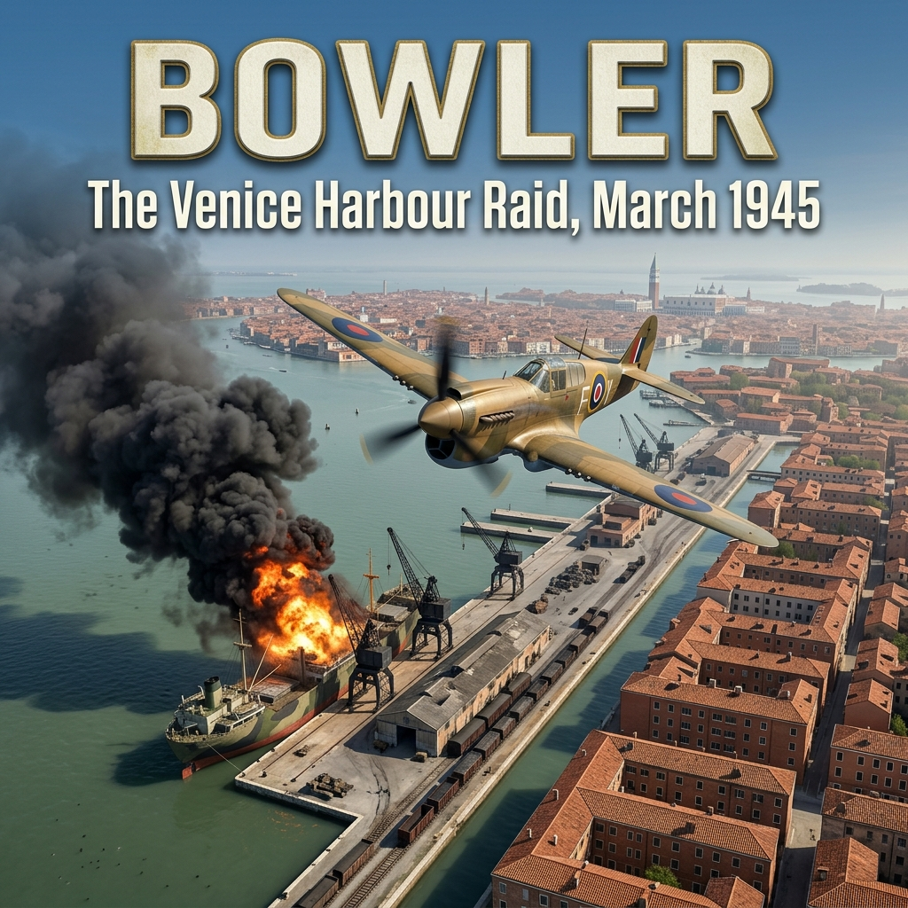

The silence in the grand corridor of the Bourbon palace was broken only by the echo of polished service boots on cold Italian marble.
Major Ernest DeWald, late of the Department of Art and Archaeology at Princeton University and now a uniformed officer of the Allied Control Commission’s Monuments, Fine Arts, and Archives Sub-Commission, carried a buff War Office folder under his left arm. The air inside the Reggia di Caserta smelled of damp limestone, stale Turkish tobacco, and the faint, sulfurous tang of mimeograph ink. Outside, through the tall arched windows that overlooked the terrace, the grey February rain of Campania fell in a steady, unrelenting drizzle.
DeWald stopped before the tall double doors leading to the private office of the Commander-in-Chief, Allied Armies in Italy. A military policeman from the Scots Guards, white-belted and motionless as stone, glanced at DeWald’s red-and-blue armlet, tapped once on the mahogany panel, and swung the door open.
General Sir Harold Alexander stood by the tall window at the far end of the room, hands clasped behind the small of his back. He did not turn immediately. His tailored service dress tunic was immaculate, the crimson band around his peaked cap resting neatly on a nearby side table beside an untouched cup of tea.
"Sir," DeWald said, coming to attention.
Alexander turned slowly. His face was weathered from the North African desert and the damp mountain winter of the Gustav Line, his eyes grey and measured. He had the quiet, unhurried demeanor of an aristocrat who had spent thirty years absorbing the shock of high-explosive artillery without flinching, but beneath the calm lay the unmistakable strain of an army stalled in the mud.
"Major," Alexander said softly. His voice was clipped, cultured, and devoid of theatrics. "You have the aerial survey from Monte Cassino?"
"I have the reconnaissance prints from eighty-two Wing, General. Taken at noon yesterday, forty-eight hours after the dust settled."
Alexander gestured toward the long mahogany table at the center of the room. "Lay them out."
DeWald stepped forward, untied the cotton tape of the folio, and spread four glossy eight-by-ten contact prints across the polished timber.
The images were sharp, taken with the nine-inch focal-length cameras of a photographic reconnaissance Spitfire flying at twelve thousand feet. They showed Monte Cassino—Hill 516—rising sheer out of the Rapido Valley. Or what was left of it.
Where the great Benedictine abbey had stood for fourteen centuries, with its colossal travertine walls, its courtyards, and its Renaissance loggias, there was now only a jagged, white-grey tooth of pulverized masonry. The mountain crest looked like a quarry struck by a meteor. Craters overlapped across the lower terraces, and the central cloister of St. Benedict had been rendered into an unrecognizable dune of chalk, broken tiles, and shattered mortar.
Alexander leaned over the table, resting the knuckles of his right hand on the mahogany. He studied the central ruin in absolute silence for almost a minute.
"One thousand one hundred and fifty tons," Alexander murmured, almost to himself. "One hundred and forty-two B-Seventeen heavy bombers, followed by the medium wings. General Freyberg was quite certain the Germans were inside the cellars."
"Yes, sir," DeWald said carefully. He kept his tone flat, the dispassionate delivery of an academic reporting on an excavation. "The New Zealand Corps was adamant."
"And were they?"
DeWald swallowed. He had spent the previous twenty-four hours interviewing intelligence officers from Fifth Army and reviewing the clandestine reports forwarded from the Holy See via the Swiss diplomatic bag.
"The Abbot, Bishop Diamare, was evacuated forty-eight hours before the strike, sir. He signed a formal deposition before the German military authorities and the Vatican Secretariat of State. Prior to the first stick of bombs leaving the bomb bays, there were zero German soldiers inside the monastery walls. None."
Alexander’s jaw tightened, the only outward sign of the fury beneath his composure.
"And now?"
"Now, General, the First Fallschirmjäger Division has moved in," DeWald replied. "The aerial prints show machine-gun positions and snipers dug directly into the cellars and the collapsed stone revetments. The bombing did not crack the mountain, sir. It cleared a field of fire for General Heidrich’s paratroopers. We have handed them a fortress carved out of our own rubble."
Alexander straightened up and walked slowly toward the fireplace, where a few olive logs smoldered without providing much heat.
"The tactical failure belongs to the army," Alexander said quietly. "The political failure belongs to the world. Have you seen the cables from London?"
"I have seen the foreign press summaries, General."
"The Foreign Office is under siege," Alexander said, turning back to face him. "The Vatican has lodged a formal protest through our minister to the Holy See. Archbishop Spellman has spoken directly to President Roosevelt. In Dublin, Madrid, and Buenos Aires, Allied embassies are being picketed by Catholic societies. Goebbels’ propaganda ministry is playing the news reels in every cinema from Oslo to Athens: the Anglo-American barbarians destroying the cradle of Western monasticism."
Alexander picked up his tea, found it cold, and set it down without drinking.
"General Eisenhower made our obligations clear in his memorandum of December twenty-ninth," Alexander continued, his eyes fixing on DeWald with sudden intensity. "Respect for monuments, so far as war allows. But Cassino has proven that 'military necessity' is a phrase easily abused by a corps commander whose infantry is bleeding on a hillside. When an army gets into difficulty, the first instinct of the general is to call for five hundred heavy bombers and level whatever sits on the horizon."
"It is an easy habit to acquire, sir," DeWald said. "And nearly impossible to break once the artillery starts falling."
"It ends here," Alexander said, his voice dropping an octave, carrying the cold, final weight of supreme command. "I will not preside over an army that reduces the Italian peninsula to a field of ash. We are fighting to liberate civilization, Major, not to erase the physical evidence that it ever existed."
Alexander walked back to the table, pulled open a shallow leather drawer, and withdrew a typed document bearing the red three-line stamp of the Mediterranean Allied Air Forces. He dropped it onto the photographs of the ruined abbey.
"This is the draft directive for historic centers," Alexander said. "I am submitting it to General Wilson at AFHQ this afternoon. From this date forward, no historic urban core in northern Italy may be subjected to area bombardment. None. Rome is out of bounds. Florence is out of bounds. And Venice..."
Alexander paused, his finger tapping the paper.
"Venice is supreme," the General said. "The entire lagoon. Not a church, not a palazzo, not a canal bridge. If an Allied heavy bomber drops so much as a single five-hundred-pound general-purpose bomb into the Grand Canal, the political repercussions will destroy the moral authority of the Allied coalition in Europe. It would finish us."
DeWald looked at the paper. "General, the Germans know this as well as we do."
"Explain."
"Kesselring’s staff officers are not fools, sir," DeWald said, leaning forward. "They have watched our medium bombers tear up the railways in central Italy under Operation Strangle. They see their overland supply lines collapsing. If we draw a sacred circle around Venice—if we tell the world that the lagoon is an untouchable cultural sanctuary—what is to stop the Wehrmacht from putting their supply depots directly beneath the shadow of the Campanile?"
Alexander’s expression did not soften.
"The law applies to both sides, Major, but we can only govern ourselves. If the enemy chooses to use the sanctuary to hide his iron, we must find a way to deal with him that does not involve smashing the stones of the Doges into dust. We will not use the heavy wings. We will not drop iron from twenty thousand feet and hope for the best."
Alexander picked up his cap and placed it carefully on his head, adjusting the peak with both hands.
"Venice is a closed city, DeWald. Write the boundary line onto every operational target map in the Mediterranean theater. Make it thick. Make it red. And inform Tactical Air Command that any pilot who drops ordnance across that line without my personal, written authority will answer to a general court-martial."
"Understood, General."
"Monte Cassino was our first and last mistake of this kind," Alexander said, looking down once more at the terrible white scar on Hill 516. "There will not be another."
The map room on the second floor of the Caserta palace smelled of ozone, ammonia from the print copiers, and wet wool.
Spread across a four-meter easel stood the logistical arteries of central Italy: the double-tracked rail lines running down from the industrial north through Florence, Bologna, and the passes of the Apennine spine, terminating in the rail hubs of Rome and the supply depots behind the Gustav Line. Across every main line, red chinagraph pencil marks formed jagged crosses.
Major General John K. Cannon, commanding Twelfth Air Force and MATAF, stood with a wooden pointer tucked under his arm, listening to his Senior Intelligence Officer.
"Operation Strangle is entering its fourth week, General," the colonel said, tapping the black line marking the central rail route between Florence and Chiusi. "Since the nineteenth of March, Mediterranean Allied Air Forces have flown over twenty-one thousand sorties against the Italian rail system. Medium bombers—B-Twenty-Fives and B-Twenty-Sixes—have taken out the marshalling yards at Terni, Orvieto, and Arezzo. Fighter-bombers from eighty-six and fifty-seven Groups have been dive-bombing every choke point on the coastal line through Grosseto."
Cannon stepped forward, his eyes narrowing at the dense cluster of red crosses along the Apennine tunnels.
"What is the net throughput to Kesselring's front?" Cannon asked. "I don't care about craters on the ballast. Ballast can be shoveled back into place by Italian labor crews overnight. What is getting through to Tenth Army?"
"Prior to March, the Germans were running an estimated forty-eight trains a day south of Florence," the intelligence officer replied. "Each train carrying roughly three hundred tons of supplies—artillery shells, small arms ammunition, synthetic fuel, engine spares. As of midnight yesterday, photo-reconnaissance confirms that zero through trains are running between Florence and Rome."
A thin, cold smile touched Cannon's mouth, but it vanished almost immediately. "Zero through trains does not mean zero supplies. How are they moving?"
The colonel turned to a series of vertical aerial reconnaissance prints pinned to the corkboard beside the map. They were taken at two hundred feet by low-level Mustang and Spitfire tactical reconnaissance flights.
"They are improvising, sir. And they are doing it with typical German thoroughness. Where a viaduct is dropped, Organisation Todt repair battalions work under blackout curtains with acetylene torches. Where a rail tunnel is blocked, they offload freight onto captured Italian civilian trucks, detour along unpaved secondary mountain tracks by night, and reload onto shuttle trains on the other side of the break."
"Trucks require rubber and gasoline," Cannon remarked. "Two things the Wehrmacht does not possess in abundance."
"Exactly, General. And that is where our fighter-bombers are catching them."
The colonel picked up a red pencil and ran it down the winding mountain roads between Perugia and the Tiber Valley.
"Every morning at first light, the P-Forty-Sevens sweep the mountain passes," the colonel said. "The Germans cannot move by day. The moment a three-ton Opel Blitz or an open staff car ventures onto the Via Flaminia or the Via Cassia after sunrise, a flight of Thunderbolts is on them with fifties and five-inch rockets. The roads are littered with burnt-out hulls. Kesselring’s supply officers are reporting that motor transport losses have doubled in twenty days. His front-line divisions facing Fifth and Eighth Armies are down to bare sustenance levels."
Cannon nodded slowly, but his expression remained grim. He had read the morning combat logs from the Cassino front. Despite the air interdiction, German paratroopers and panzergrenadiers on the Gustav Line were still fighting with savage determination. Every ridge was contested; every ruined farmhouse held an MG 42 machine-gun nest.
"Sustenance is not starvation," Cannon said flatly. "They are still holding the mountain. They are still firing their heavy mortars. Where is the fuel coming from to keep their tanks in counter-attack reserve?"
"They have cut their domestic consumption to the bone, sir. Civilian rail traffic in occupied northern Italy has been terminated entirely. Coal is restricted to essential war factories in Milan and Turin. Everything is stripped for the front. But the friction is accumulating. Their logistical spine has been severed. It is now a broken ladder."
Cannon walked along the length of the map, his gaze tracking north, past the Apennines, past the broad, flat agricultural expanse of Emilia-Romagna, to the vast blue-grey ribbon that cut northern Italy in two from the Alps to the sea: the River Po.
"Look north," Cannon said, tapping the wooden pointer against the Po. "If the central rail lines are cut, how does Albert Kesselring intend to sustain the summer campaign once Alexander launches his spring offensive?"
The intelligence officer stepped alongside him.
"He has two choices, General. Either he pulls back north of Rome to shorten his lines, or he depends on the crossings over the Po to feed his armies in the south. Every ton of coal, every shell casing from the Skoda works, every liter of synthetic oil from the Reich must cross that river before it can reach the Apennine passes."
"Then the Po is the real throat," Cannon said.
"Yes, sir. But right now, the Po is bridged by sixteen permanent steel and stone railway spans and dozens of heavy pontoon and road crossings. Even with Strangle tearing up the rail lines south of the river, Kesselring can still dump hundreds of tons of supplies into northern depots and stockpile them along the riverbanks."
Cannon tapped the pointer hard against the map, right at the junction where the Po flowed into the Adriatic marshes.
"We have proven that tactical fighter-bombers can choke off the roads south of the Apennines," Cannon said. "Next, we take down the river itself. I want an operational plan drawn up for the medium wings. Fifty-seventh Bomb Wing. B-Twenty-Fives. Every bridge across the Po, from Piacenza down to the delta, is to be dropped into the current."
"That is a massive undertaking, General. The flak belts around the Po crossings are among the densest in northern Italy. The Germans know the value of those bridges."
"Then they can watch them fall," Cannon replied coldly. "We take out the bridges, and Kesselring's Tenth and Fourteenth Armies will be trapped on the wrong side of the water, starved of iron, rubber, and oil."
The intelligence officer looked at the eastern edge of the Po delta, where the river fanned out into a labyrinth of tidal marshes, lagoons, and narrow coastal shoals. Just north of the delta lay the crescent of the Venetian lagoon.
"And if the river is barred to them, General?"
"Then they drown," Cannon said. "Or they find another way to move."
The heat coming off the metal revetments at Ghisonaccia Airfield was dry and brutal, smelling of scorched wild sage, high-octane aviation fuel, and roasting tires.
Brigadier General Robert D. Knapp, commanding the B-25 Mitchell medium bombers of the 57th Bomb Wing, stood by the wing of a North American B-25J named Briefing Time. His flight overalls were soaked through with dark patches of sweat beneath his Mae West life preserver. Around him, the twin Wright R-2600 Cyclones of forty-eight twin-tailed bombers coughed, caught fire in staccato bursts, and settled into a deep, vibrating drone that shook the Corsican gravel beneath their boots.
Beside Knapp, his wing operations officer unfolded a silk aeronautical chart across the horizontal stabilizer of a trailer.
"The order came down from MATAF at zero-six-hundred, General," the operations officer said, raising his voice above the crescendo of idling radial engines. "Operation Mallory Major. General Cannon wants the Po River sealed off from Piacenza down to the Adriatic delta. Twenty-two targeted bridge crossings. Every permanent steel rail span, every stone masonry road viaduct, every pontoon bridge Kesselring has built since the fall of Rome."
Knapp did not blink. He was a pioneer of medium-altitude precision bombing, the man who had perfected the tactical use of the Norden bombsight in 60-degree glides and low-level formation drops against bridge abutments.
"How many bridges are currently carrying German military traffic?" Knapp asked.
"Sixteen permanent spans are fully operational, sir. Rail hubs at Ferrara, Ostiglia, Borgoforte, and Casalmaggiore are funneling up to twenty trains an hour across the water under the cover of night. By day, they park the locomotives inside tunnels or beneath camouflage nets, but the moment dusk falls, Tenth Army feeds across those rails."
"Not after this week," Knapp said, pulling on his flying gauntlets. "Brief the bomb groups. Three-Ten, Three-Twenty-One, and Three-Forty. Five-hundred-pound and one-thousand-pound demolition bombs. We don't drop on the river approaches. I want the piers broken and the center spans dropped straight into the current. If the Germans want to supply their Gothic Line, they can learn to swim."
Thirty minutes later, the first box of twelve B-25s roared down the pierced steel runway, banking north-northeast across the Tyrrhenian Sea toward the coast of Tuscany.
At ten thousand feet over the Lombard plain, the Po River lay coiled across northern Italy like an immense, glittering silver serpent. The valley was an emerald patchwork of vineyards, wheat fields, and poplars, but as the formation crossed the Apennine ridgeline, the sky ahead turned hostile.
"Flak coming up, twelve o'clock low!" the lead navigator’s voice crackled through the intercom.
Below them, near the great steel rail bridge at Ostiglia, Flakgruppe Mittelitalien had established one of the thickest anti-aircraft belts in the Mediterranean theater. Dozens of heavy 8.8cm Flak 36 batteries and rapid-firing 3.7cm automatic guns ringed the riverbanks. Black puffs of high explosive detonated in violent clusters around the lead formation, greasy smudges of charcoal smoke leaving dirty streaks across the clear morning blue.
A piece of hot shrapnel clattered like gravel against the belly aluminum of Knapp’s Mitchell, tearing through the radio compartment with a sharp, metallic screech.
"Steady on the heading," Knapp commanded over the command channel. "Bombardier has the ship."
Down in the plexiglass nose, the bombardier lay flat on his chest, peering through the rubber eyepiece of the gyro-stabilized Norden sight. Through the crosshairs, the Ostiglia railway bridge expanded—four massive steel lattice trusses resting on heavy stone pillars sunk into the muddy brown water of the Po. A German military freight train, caught on the south bank, was desperately reversing toward the shelter of a willow grove.
"Centering azimuth... rate synchronized," the bombardier muttered into his throat mic. "Hold her level, Skipper... hold her level..."
A sudden shudder ran through the airframe as the bomb-bay doors groaned open against the slipstream.
"Bombs away!"
Six one-thousand-pound general-purpose bombs slid out of the racks, tumbling into the open air before their nose fins bit into the slipstream and stabilized their flight paths. Behind the lead aircraft, thirty-five more Mitchells dropped in tight, three-second intervals. Over two hundred tons of high-explosive demolition iron plummeted in a whistling arc toward the river.
Three miles behind the formation, the tail gunners watched the strike through the dust-scratched perspex of their turrets.
The water of the Po erupted in towering white geysers that rose two hundred feet into the air. But through the geysers came the bright orange flashes of direct impact. Four one-thousand-pounders smashed square into the central stone pier of the Ostiglia bridge.
The masonry pulverized in a blinding cloud of stone dust and yellow cordite smoke. Deprived of its foundation, the massive two-hundred-foot steel truss warped, twisted like wire, and collapsed with a cataclysmic splash into the river, damming the brown current.
Across seventy-two hours, the Mitchells returned again and again.
On 13 July, the 310th Bomb Group took down the highway bridges at Borgoforte and Casalmaggiore. On 14 July, the 321st dropped the rail bridges at Ferrara and Torre Beretti. By the evening of 15 July, the final bridge at San Benedetto Po was broken in two, its iron spans submerged in the swirling shallows.
Back at Caserta, General Cannon received the strike reconnaissance photographs while the prints were still dripping with fixative.
Every permanent rail and road bridge spanning the Po River between Piacenza and the Adriatic Sea—all twenty-two targets—had been severed, collapsed, or shattered into useless scrap.
Field Marshal Albert Kesselring’s logistical chiefs now faced absolute catastrophe. With the permanent bridges at the bottom of the Po and Allied fighter-bombers hunting anything that moved on the roads south of the river by day, overland military traffic across northern Italy had suffered a total coronary.
German Pioniere battalions scrambled to build pontoon bridges and cable-guided timber ferries, but their nightly capacity was a pathetic trickle compared to the thousands of tons of ammunition, spare tank tracks, and artillery propellant required to hold the Gothic Line.
The Po had become an impassable barrier. If the German Tenth Army was to survive the coming autumn, its supplies could no longer travel across the river.
They had to go around it.
And on the headquarters maps in Kesselring’s command post, only one viable, sheltered waterway bypassed the river entirely: the dark, tranquil coastal waters of the upper Adriatic, leading straight into the untouched, legally immune sanctuary of the Venetian lagoon.
The launch of the Kommandierender Admiral Adria moved west along the Giudecca Canal under an overcast autumn sky.
Flying the flag of a German vice-admiral at its bow, the boat carried Vizeadmiral Joachim Lietzmann, supreme commander of German naval forces in the Adriatic. Beside him in the open cockpit stood the naval transport officer for the Venice sector and an Oberstleutnant representing the Oberquartiermeister—the chief supply section—of the German Tenth Army.
Behind them lay the historic skyline: the domes of Santa Maria della Salute, the Doge’s Palace, and the needle of the Campanile. Not a single pane of glass was cracked. While every rail junction from Florence to Bologna lay twisted into blackened scrap by Allied medium bombers, Venice remained untouched, eerily serene in the damp sea air.
The Tenth Army logistics officer stared back at the distant monuments, then pulled his coat collar up against the breeze.
"Three days ago, Admiral, Eighth Army fighter-bombers strafed my supply columns south of Ferrara," the army officer said. "We lost fourteen three-ton trucks in broad daylight on the open road. The Po is choked with dropped bridges. Yet here, thirty miles north of their lines, there is not an air-raid siren sounding."
Lietzmann kept his gaze forward, watching the industrial cranes of the Stazione Marittima grow against the grey horizon.
"General Alexander has his orders from London and Washington," Lietzmann replied. His tone was dry, aristocratic, and practical. "After the destruction of Monte Cassino, the Allied Mediterranean command cannot afford the moral disaster of damaging Venice. The entire lagoon is encircled by a cultural bombline. Field Marshal Kesselring recognizes that their political restriction is our tactical salvation."
The launch throttled back, sliding from the broad expanse of the Giudecca Canal into the narrow waters of the Canale della Scomenzera.
Here, on the western fringe of the city, Venice ceased to be a museum. The Stazione Marittima was an extensive commercial port consisting of reinforced-concrete quays, rail links extending over the causeway from the mainland, electric portal cranes, and sprawling transit sheds.
Tied up along Berth 1 was a camouflaged German merchant vessel, her superstructure draped in nets and green canvas: the 3,682-ton steamship Otto Leonhardt, registered out of Hamburg. Beside her, at Berth 2, lay the rakish, grey profile of the torpedo boat TA42—formerly the Italian navy's Alabarda, seized following the Italian armistice and now armed with German 20mm and 37mm anti-aircraft mounts. Further down the basin, four blunt-nosed Marinefährprähme—armed naval landing lighters—sat low in the water.
The launch came alongside the concrete apron of Berth 1. The naval transport officer stepped onto the stone stairs and secured the painter to an iron ring.
Lietzmann climbed onto the quay, his naval greatcoat swinging in the wind, accompanied by the Tenth Army officer. Overhead, the heavy electric cranes whined as their jibs traversed, swinging timber pallets out of the forward hold of the Otto Leonhardt.
Soldiers of the Wehrmacht and naval working parties directed the slings. The crates landing on the quayside were stenciled in yellow gothic script: 10.5 cm le.F.H. 18 and 15 cm s.F.H. 18—standard field artillery ammunition.
"The coastal route is established," the naval transport officer reported, unfolding an unclassified naval hydrographic chart of the Gulf of Venice against the cab of a crane. "The rail system brings the ordnance down from Austria through the Julian Alps directly into Trieste and Fiume. From there, our coastal convoys depart at dusk."
The Tenth Army officer examined the blue lines tracing the coastline. "And Allied air patrol?"
"They sweep the open sea with radar, but they cannot sweep the mudflats," the transport officer explained. "Our shallow-draft lighters and small freighters hug the coastline, keeping inside the three-fathom line where Allied naval craft cannot follow. We cross the northern gulf under darkness. By zero-four-hundred, the convoys slip through the barrier passages—either the Porto di Lido or the Porto di Malamocco—under the protection of our coastal flak batteries. Once inside the lagoon, we tie up here. In daylight, we unload in complete safety."
"And the transit south?" the army officer pressed. "The railway bridges across the Po remain impassable. General Traugott Herr's divisions on the Senio front cannot fire assurances; they need brass."
Lietzmann pointed toward the south end of the basin, where a string of steel canal barges was being loaded by dockside cranes.
"They do not travel by rail," Lietzmann said. "From these quays, the munitions are lowered directly into shallow-draft barges. They exit the western basin, enter the Naviglio del Brenta, and connect into the Canalbianco and the Po di Levante. The entire route to Romagna is internal water. The barges travel by night through the coastal cuts, completely bypassing the Po River bridges. They deliver the shells into Tenth Army’s rear ammunition dumps without ever placing a single tire on an exposed highway."
Lietzmann turned, walking toward a long, brick transit warehouse marked as Magazzino 4—Shed 4.
The sliding steel doors stood wide open. Inside, stacked in endless, orderly rows three tiers deep, lay hundreds of dark iron spheres fitted with contact horns, alongside crated torpedo warheads and depth charges.
"Our central Adriatic naval magazine," Lietzmann remarked, his voice dropping slightly. "Mines and explosives for the defense of the littoral, stockpiled directly on the wharf."
The Tenth Army officer looked from the stacked high explosives in Shed 4 across the narrow sixty yards of the Canale della Scomenzera.
Directly opposite the wharf, rising straight from the water’s edge, stood the crowded, five-story brick tenement blocks of Santa Marta, with laundry hanging between the windows and Italian civilians walking along the paved fondamente.
"If the British discover this magazine," the army officer said quietly, "and decide to violate their cultural line... a single direct hit will obliterate the docks and take the civilian quarter with it."
Vizeadmiral Lietzmann looked across the water toward the distant campanili rising above the tiled roofs of the city.
"General Alexander will not authorize it," Lietzmann said with finality. "The Mediterranean Allied Air Forces do not possess the precision to drop iron onto this basin without striking the city. And so long as they cannot strike without destroying Venice, this port remains open. We will feed the front from here."
The damp chill of the Venetian winter clung to the brickwork like grease. Before sunrise, the alleyways off the Fondamenta delle Case Nuove in the working-class quarter of Santa Marta were completely dark, submerged in the cold mist that rolled off the mudflats of the Giudecca Canal.
Patrols of the Republican Fascist Brigata Nera and German military police moved along the waterfront routes in pairs, submachine guns slung beneath heavy rubberized capes. Across the narrow sixty-yard strip of water separating the tenements from the wharves, the high iron jibs of the Stazione Marittima portal cranes loomed over the basin like black skeletons.
In an unheated room of a brick tenement near the Campo San Basegio, the clandestine military organization of the Venetian Comitato di Liberazione Nazionale (CLN) operated in absolute secrecy.
Sitting at a wooden table beneath the weak yellow glow of an oil lamp was Giuseppe Turcato—known throughout the Venetian underground by his battle name, "Marco." A veteran anti-fascist organizer and political commissar of the local Brigata Garibaldi "Francesco Biancotto," Turcato coordinated the clandestine flow of information gathered by dockworkers, railway employees, and canal boatmen across the city.
Across the table sat a railway worker from the freight marshalling yards of the Stazione Marittima, his hands blackened by locomotive coal and calloused from handling cargo crates.
"The night shift came off the quays at zero-five-hundred," the railwayman reported in a low voice, speaking barely above a whisper. "The Germans have doubled the sentries along Berth One and Berth Two. Italian civilian laborers were cleared off the central pier before the ship's hatches were unbattened."
Turcato smoothed out a scrap of greaseproof tracing paper on the timber table, holding a pencil lead steady. "Which vessel?"
"The Otto Leonhardt," the railwayman said. "A three-thousand-ton German freighter. She slipped through the Malamocco channel under blackout two nights ago, escorted by a Kriegsmarine pilot boat. She is tied up directly beneath crane number four."
"What is coming out of the holds?"
"Artillery ammunition," the worker stated flatly. "Thousands of timber cases stenciled with German army ordnance marks. Ten-point-five centimeter and fifteen centimeter field gun shells. Wehrmacht working parties are loading half of it directly onto freight wagons on the railway spur, but the rest is being winched straight down into shallow-draft canal barges tied alongside the hull."
Turcato made rapid, precise notations on the paper: berth coordinates, crane positions, cargo classifications.
"And the barges?" Turcato asked. "Where do they steer once they clear the basin?"
"They head south through the internal canals," the railwayman replied. "They avoid the railway bridge and the open sea entirely. They enter the cuts toward Chioggia, then down into the Po di Levante and the Canalbianco. They are feeding the artillery reserves of the German Tenth Army directly behind the front lines in Romagna."
Turcato looked up from the table. "And the torpedo boat?"
"The TA42 is moored at Berth Two," the worker said. "Twin automatic flak guns mounted on her deck, crews on standing alert. And across the apron, Magazzino 4 has been filled to the rafters."
The pencil paused. "Shed Four?"
"Naval contact mines," the railwayman whispered. "Spherical iron mines, depth charges, and torpedo warheads unloaded from Adriatic lighters. The Germans have turned the transit shed into a central explosive magazine. If that warehouse is hit, the blast will take Berth One, the cranes, and every tenement across the canal with it. The shockwave will smash straight into Santa Marta."
Turcato carefully folded the thin sheet of tracing paper until it was a tight square no larger than a postage stamp. He pressed it into the lining of an empty matchbox.
"A fishing craft leaves Pellestrina at dusk," Turcato said. "From the southern lagoon, the courier moves across the marsh lines on foot into British lines. The report goes directly to the Special Operations liaison officers attached to the Allied Eighth Army."
The railwayman stared toward the shuttered window. Outside, through the mist, came the distant, hollow clang of heavy iron railcars shunting on the mainland causeway.
"If the British receive this intelligence," the worker said, "they will know the entire German supply line runs through our docks. What prevents them from sending the bombers?"
Turcato pushed the oil lamp back, his face hard in the shadow.
"Venice is on the protected list," Turcato said quietly. "The radio from the south repeats it every week: the Allies will not bomb the historic center. The monuments protect the city."
The railwayman stood up, pulling his woolen cap down against the cold.
"The monuments protect the palazzi on the Grand Canal," the worker muttered, looking toward the dark basin across the water. "They do not protect the dockers sleeping sixty yards from three hundred tons of high explosive."
The winter war in the Romagna plain was fought in the freezing yellow clay of the flood dykes.
Along the Senio River, north of Faenza and east of Cotignola, the front line of Lieutenant General Sir Richard McCreery’s British Eighth Army was wedged into the southern embankment of the river’s argine—the thirty-foot-high earthen dykes built over centuries to contain the seasonal floods.
On the southern slope, British infantry of V Corps and Polish troops of the II Polish Corps dug their slit trenches into the wet mud, their canvas revetments collapsing under persistent freezing rain and sleet. On the northern slope, less than thirty yards away across the crest of the embankment, sat the paratroopers of the German 1st Fallschirmjäger Division and the grenadiers of the 98th Infantry Division.
Between them lay a narrow strip of frost-covered clay, raked continuously by MG 42 machine-gun bursts and grenade bundles lobbed blind over the lip of the embankment.
In a reinforced observation dugout carved beneath the roots of a shattered willow tree, a Royal Artillery Forward Observation Officer (FOO) pressed the rubber eyecups of his trench periscope against his binoculars. His hands, inside cut-off wool gloves, were raw and split from the wet cold. Beside him, an artillery signaller sat on an empty wooden twenty-five-pounder shell box, the headset of his wireless remote receiver pressed to one ear.
Through the periscope, the landscape beyond the northern dyke stretched flat, grey, and desolate: stripped vineyards, flooded drainage ditches, and the skeletal brick ruins of farmhouses blasted down to their stone foundations.
A sudden, tearing screech split the freezing air—the unmistakable sound of incoming heavy artillery.
"Incoming," the officer said, dropping his chin against his chest.
The shells arrived in a tight, battery-sized salvo of four. They detonated two hundred yards behind the dyke, walking across a reserve company assembly trench. The ground heaved violently; the periscope mirrors rattled inside their brass casing; and the shockwave slapped against the sandbagged entrance of the dugout, filling the damp air with the acrid, chemical stink of cordite and pulverized soil.
Before the smoke from the first salvo could drift clear, a second battery struck—heavier caliber, the deep, hollow roar of 15cm heavy field howitzers. Then a third.
The signaller raised his voice above the rolling concussions. "Target area Charlie-Four, sir! That’s thirty rounds inside two minutes!"
The artillery officer checked his waterproof compass and grease pencil notes. He marked the time on the log sheet: 11:14.
For three weeks, Eighth Army Intelligence summaries issued from rear headquarters at Forlì had repeated the same operational assessment: Enemy ammunition reserves severely degraded. Air interdiction south of the Po and destruction of the permanent crossings have forced the German Tenth Army onto strict ammunition rationing, estimated at five to ten rounds per barrel per day.
Yet the reality on the Senio dykes contradicted the staff officers’ charts.
The German batteries concealed in the orchard belts around Lugo and Bagnacavallo were not firing five rounds a day. They were laying down coordinated defensive barrages, plastering forward communication trenches, counter-battery positions, and artillery parks with unrationed abundance.
An infantry company commander from the frontline battalion scrambled through the communication trench, sliding through calf-deep liquid clay into the dugout entrance. His woolen balaclava was caked with wet dirt, his Sten gun slung muzzle-down beneath his groundsheet.
"Where in the world are they getting the brass?" the infantry officer demanded, wiping freezing mud from his eyes. "That’s the fourth concentration on our reserve company since daybreak. If McCreery’s intelligence people say the Germans are out of ammunition, someone ought to bring those staff wallahs up to this wretched ditch to count the shrapnel."
The artillery FOO picked up his field telephone handset and wound the magneto crank twice.
"Battery command post," the telephone crackled back through the landline, drowned in static.
"Observation Post Sunray," the FOO reported, keeping his voice level. "Log another concentration. Heavy battery, fifteen-centimeter, grid reference four-two-eight-eight-one-five. Plus two batteries of ten-point-five centimeter. Sustained rate. No fire rationing observed."
"Understood, Sunray. Corps intelligence wants confirmation on shell fragments."
"Tell Corps intelligence they don't need fragments," the FOO said dryly. "Tell them to listen to the horizon. Traugott Herr has all the shells he needs."
Thirty miles to the south, inside the requisitioned administrative buildings at Forlì, the daily intelligence sitreps were pinned to the corkboards of Eighth Army Tactical HQ.
The map of the Italian front showed the Allied armies deadlocked. To the west, the American Fifth Army was frozen in the snow-choked passes of the northern Apennines south of Bologna. To the east, Eighth Army was paralyzed in the waterlogged flats of the Romagna plain.
Operation Grapeshot—the final, decisive Allied spring offensive designed to smash the German Tenth and Fourteenth Armies, breach the Senio line, and break out into the Lombard plain—was scheduled for early April. But the operational plan hinged entirely on artillery superiority. If the German Tenth Army possessed sufficient artillery ammunition to contest every river line, dyke, and irrigation canal between the Senio and the Po, the offensive would turn into a bloodbath.
Behind the locked doors of the Advanced Air Intelligence section, an intelligence officer compared two sets of figures.
On the left sheet were the rail-interdiction summaries from the Mediterranean Allied Air Forces: every bridge across the Po remained dropped; fighter-bombers had destroyed over four hundred German supply trucks south of the river in the preceding thirty days; day movement along the main roads was virtually nonexistent.
On the right sheet was the Senio expenditure log: the German Tenth Army was firing an estimated four thousand heavy and medium artillery rounds every twenty-four hours along the V Corps and Polish sectors.
The officer laid down his pencil. The math was impossible. The ammunition was not coming across the ruined Po bridges, and it was not moving along the bombed highway network.
Yet thousands of tons of freshly manufactured artillery shells were arriving in General Traugott Herr’s forward ammunition parks every single week.
The supply line was real, it was fully functional, and it was operating right under the nose of Allied Mediterranean Command.
The Supermarine Spitfire PR Mk XI touched down on the pierced steel runway at three hundred miles per hour, its broad radiator chin scooping the cool Adriatic air before the pilot cut the throttle and let the tail skid drop.
Finished in glossy, unbroken Photographic Reconnaissance Unit blue, the aircraft had no guns, no armor plate, and no radio transmitter beyond a short-range homing set. In place of Browning machine guns, the wings held two ninety-gallon leading-edge fuel tanks; behind the pilot’s cockpit, mounted vertically inside the fuselage, sat a pair of F.52 aerial cameras with thirty-six-inch focal-length lenses, angled to deliver a ten percent split-vertical overlap from thirty thousand feet.
The pilot taxied off the PSP strip into the dispersal revetment. Before the four-bladed Rotol propeller had ceased windmilling, three RAF ground-crew airmen were already unfastening the quick-release Dzus fasteners on the camera hatch beneath the fuselage.
The airmen hauled down two heavy metal film magazines. The alloy casings were ice-cold to the touch, frosted with condensation from two hours spent in the negative-fifty-degree stratosphere over the northern Adriatic.
"How was the cloud over the gulf?" an intelligence sergeant shouted over the settling engine ticks.
"Clear as plate glass from Ravenna to the Alps," the pilot said, unclipping his oxygen mask and peeling off his silk inner gloves. "Ran the run at thirty-one thousand. Not a single Me-One-Oh-Nine in the sky, but the flak over the Venice littoral was tracking with radar. Heavy stuff. Bursting two thousand feet below my tail."
The airmen carried the film magazines straight into the Photographic Processing Truck—a requisitioned Bedford three-ton mobile darkroom parked beneath camouflage netting at the perimeter of the airfield.
Inside the trailer, the air was hot, sour, and suffocating, reeking of glacial acetic acid, amidol developer, and sodium thiosulfate fixer. Under the dim, red safelights, photographic technicians worked with disciplined, mechanical precision. The long ribbons of nine-inch-wide celluloid film were wound onto motorized developing drums, dipped into the temperature-controlled chemical vats, rinsed in running water, and fed through the electric drying cabinet.
Forty minutes later, the first continuous roll of dried negatives was delivered to the Photographic Interpretation trailer.
A Flight Lieutenant of the Mediterranean Allied Photographic Reconnaissance Wing (MAPRW) sat at a zinc-topped table, a lighted glass viewing box humming quietly before him. Beside him lay a Type D folding mirror stereoscope, a brass micrometer, and the latest target folders for the northern Adriatic coast.
With grease pencils tucked behind his ears, the interpretation officer turned the film spool rollers, advancing the negatives frame by frame across the illuminated glass.
Frame 1042: The southern lagoon. The thin, white Istrian stone line of the Murazzi at Pellestrina.
Frame 1043: The Porto di Malamocco. The circular concrete emplacements of Marine-Artillerie-Abteilung 632, the heavy 8.8cm Flak guns casting sharp, triangular shadows across the sandbars.
Frame 1044: The Giudecca Canal. The historic core of Venice—the Grand Canal winding like an inverted letter 'S' through the dense, tiled roofs of the sestieri; the Doge’s Palace; the Campanile standing erect, casting its long afternoon shadow across the empty expanse of Piazza San Marco.
The interpreter reached for the frame counter, advanced the film two inches, and stopped.
Frame 1045.
He pulled the mirror stereoscope down over his eyes, aligning the dual lenses over the overlapping negative pair of the city's western extremity. Instantly, the flat photographic emulsion sprang into startling, three-dimensional relief.
"Bring me the Venice port ledger," the officer ordered quietly to his corporal assistant. "And the latest SOE courier transcript from No. 1 Special Force."
Under the twin lenses of the stereoscope, the commercial docks of the Stazione Marittima rose up in stark, three-dimensional clarity:
The concrete finger quays stood distinct above the dark water. The heavy electric portal cranes along the wharves were racked with shadow.
The officer leaned closer, adjusting the fine-focus thumbscrews.
Tied up alongside Berth 1, nestled beneath the jibs of cranes three and four, was a large merchant vessel. The stereoscope revealed her twin cargo holds, her raised center island, and the dark, tell-tale openings of her forward hatches.
Using the brass micrometer, the interpreter measured the hull length on the negative against the known camera altitude of thirty-one thousand feet.
"Three hundred and eighty feet length overall," he muttered, scribbling on his pad. "Beam fifty-two feet. Approximately thirty-seven hundred gross tons. Single funnel aft of midships. Matches the German merchantman Otto Leonhardt."
He slid the stereoscope two inches to the left, focusing on Berth 2.
A slender, needle-nosed warship was moored directly against the pier. Her low freeboard and narrow beam were unmistakable. On her forward and aft decks, circular gun tubs showed the distinctive silhouettes of automatic anti-aircraft weapons.
"Torpedo boat," the interpreter noted. "Ariete class. Ex-Italian. Operating under Kriegsmarine designation TA42."
He moved the lenses across the water of the Canale della Scomenzera.
Along the stone revetments of the adjacent basins sat five blunt-bowed Marinefährprähme—F-lighters—and two motor coasters. But it was the smaller traffic that arrested his attention. Tied along the offshore flank of the Otto Leonhardt, clustered like water beetles around a carcass, were four shallow-draft canal barges.
On the quayside between the ship and the railway siding, timber crates were stacked in dense, rectangular blocks, casting short shadows on the concrete. Even at thirty-one thousand feet, the layout was clear: cargo was being transferred directly from the freighter's holds into the canal craft.
The interpreter paged through the intelligence summary forwarded forty-eight hours earlier from the Venetian CLN. The agent's report from Santa Marta had described the nocturnal movements: Internal waterways. Chioggia cuts. Po di Levante. Canalbianco. Delivering direct to Tenth Army.
The interpreter traced the southern canal branches leading out of the lagoon toward the Po delta.
The jigsaw puzzle was complete.
The Germans were not trying to cross the ruined Po bridges with trucks. They did not need to. They were bringing thousands of tons of heavy artillery shells down the Adriatic coast from Trieste under the cover of night, docking them inside the legally immune sanctuary of the Venetian lagoon, and funneling them south through the inland canals straight into the ammunition dumps behind the Senio.
The interpreter pushed the stereoscope back, stood up from the lightbox, and reached for the red scrambler telephone linked directly to Desert Air Force Advanced Headquarters at Forlì.
"Get me Air Intelligence," the officer said into the mouthpiece. "Priority flash. We have the source of the Senio artillery. The whole German supply line is sitting tied to the wharves in Venice."
The tactical command caravan of the Desert Air Force smelled of damp linoleum, stale Capstan tobacco, and wet canvas. Outside, the steady drizzle of late winter fell across the mud of Forlì airfield, where fuel bowsers and three-ton Bedford trucks churned the soil around the operations trailers into deep, greasy ruts.
Air Vice-Marshal Robert "Pussy" Foster sat behind a narrow fold-down desk, his peaked cap shoved back on his forehead. At forty-six, Foster was a veteran of the First World War and the Western Desert; his dark eyebrows were heavy, his eyes bloodshot from weeks of uninterrupted planning for the coming spring offensive.
Pinned to the plywood partition behind him was a large-scale operational map of Emilia-Romagna. A thick black grease-pencil line marked the Senio River.
Across the desk stood his Senior Intelligence Officer and an air operations staff officer. Between them lay the newly arrived photographic dossier from No. 682 Squadron: twelve nine-by-nine contact prints, still glossy, showing the Stazione Marittima of Venice under direct sunlight.
Foster tapped the ash from his cigarette into a spent twenty-millimeter shell casing that served as an ashtray.
"So that is where Traugott Herr gets his shells," Foster said, his voice gravelly and low. "While McCreery’s infantry freeze on the dykes, the Kriegsmarine runs their cargo boats into Venice under broad daylight and offloads onto canal barges. It's utterly brazen."
"It is logical, sir," the Senior Intelligence Officer replied. "They know the standing directives as well as we do. The cultural bombline drawn after Cassino has protected them for thirteen months. Venice is an open sanctuary."
Foster picked up a magnifying glass with a brass collar and examined the negative strip showing Berth 1.
"The freighter," Foster said. "What is her displacement?"
"Thirty-six hundred and eighty-two tons gross, sir. The Otto Leonhardt. Holds number one and two are unbattened. Our photo-interpreters estimate she is carrying between two and three thousand tons of artillery munitions. The torpedo boat TA42 is moored at Berth Two with flak guns manned. And this long structure here—" the officer’s pencil point touched a long, rectangular building on the central quay "—is Magazzino 4. CLN courier reports confirm it is packed to the roof with naval contact mines and depth charges."
Foster stood up, rubbing the small of his back, and walked over to the map of the Romagna front.
"General McCreery was on the scrambler to me from Eighth Army headquarters at noon," Foster said quietly. "Operation Grapeshot is scheduled for the first week of April. The Polish Corps and V Corps must breach the Senio, cross the Santerno, and break through the Argenta Gap. If the German Tenth Army continues to receive thousands of rounds of heavy artillery per week from this Venetian pipeline, our infantry will be butchered on the flood banks. The offensive will stall in the marshes."
Foster turned back to the desk, his eyes hardening.
"The port must be destroyed," Foster said. "Call Fifty-seventh Bomb Wing. We give the target to the medium bombers. Bring Knapp's B-Twenty-Fives over from Corsica. Three groups. Sixty aircraft carrying two-thousand-pounders. Level the berths, collapse the quays, and drop the whole wretched complex into the mud of the lagoon."
The Senior Intelligence Officer did not move. He waited a beat before answering.
"We cannot use the medium wings, Air Vice-Marshal."
Foster’s eyebrows knit together. "Why in the world not? Knapp dropped every bridge over the Po in seventy-two hours."
"A bridge over an open river is one thing, sir. The Stazione Marittima is something else entirely."
The intelligence officer reached into his portfolio and pulled out an architectural overlay map of Venice, drawing a series of concentric red circles in ink around the western docks.
"A formation of B-Twenty-Fives dropping from eight to ten thousand feet has a circular error probable of three hundred yards under ideal conditions," the officer explained calmly. "In combat, with flak bursting through the formation, the pattern will scatter over half a mile."
The officer laid the transparent overlay over the aerial prints.
"Look at the clearances, sir," the intelligence officer continued. "The commercial basin is separated from the city by nothing more than a canal. The Basilica di Santa Maria Gloriosa dei Frari—housing the tomb of Canova and the greatest masterpieces of Titian—is exactly fourteen hundred yards to the east. The Scuola Grande di San Rocco is twelve hundred yards. Piazza San Marco and the Doge's Palace are less than two miles down the Grand Canal. And directly across the Canale della Scomenzera, sixty yards from Berth One, are the tenement blocks of Santa Marta."
Foster stared at the red concentric circles.
"If a medium box drops wide," the officer said bluntly, "two hundred tons of demolition bombs will scatter across the historical core of Venice. The Campanile will be brought down. Churches will be leveled. Hundreds, perhaps thousands, of Italian civilians will be crushed in their beds. And the international fallout will make Monte Cassino look like an administrative oversight."
Foster leaned both hands on the edge of the table, his cigarette burning down to the yellow paper.
"Alexander’s cultural immunity directive," Foster muttered.
"Yes, sir. Caserta will never clear medium bombers for a strike inside the lagoon. General Clark and Field Marshal Alexander would veto the tasking within five minutes of it reaching their desks. If we drop iron onto the Frari or the Doge's Palace, London and Washington will demand someone’s head on a plate."
Foster straightened up. He took a long drag from his cigarette, exhaling the blue smoke against the caravan’s low ceiling.
"Then the mediums are out," Foster said. "Area bombing is out. But those ships cannot remain afloat. Traugott Herr cannot be allowed to feed his guns on the Senio."
"If we are to hit the berths without striking the city, sir, it can only be done with fighter-bombers," the air operations officer said. "And not with conventional glide-bombing runs. A standard thirty-degree dive imparts a forward throw that will carry any stray bomb straight into the churches."
Foster’s gaze narrowed as he grasped the tactical reality.
"Then we don't glide," Foster said. "We drop straight down the chimney. What wing do we have at Cervia?"
"Two-Thirty-Nine Wing, sir. George Westlake's outfit. Kittyhawk Fours and Mustang Threes."
Foster looked at his watch: 14:48.
"Get on the wireless to Cervia," Foster ordered. "I want Wing Commander Westlake in this caravan before nightfall. Tell him to bring his operations officers and his ballistics tables. If we are going to strike inside the open city, we are going to have to reinvent how to drop a bomb."
The blackboard on the wall of the planning room was covered in chalk diagrams: velocity vectors, release angles, trajectory parabolas, and calculated yards of forward throw.
A Squadron Leader of the Royal Air Force, serving as Chief Armament Officer for the Desert Air Force, stood beside the board with a box of chalk. Across the trestle table sat Air Vice-Marshal Foster and two senior staff officers from operations. Spread between them was a 1:5,000 survey map of Venice, its grid lines marked in red grease pencil.
"Let us review the standard tactical manual," the armament officer began, drawing a diagonal line at a shallow angle across the board. "The standard fighter-bomber delivery practiced by our wings across the desert and throughout the Italian campaign is the glide-bomb attack. The aircraft approaches the target area at seven to eight thousand feet, rolls into a thirty-degree dive, and releases at three thousand feet at an indicated airspeed of three hundred knots."
The officer turned to Foster.
"At three hundred knots, Air Vice-Marshal, an aircraft is traveling at five hundred and six feet per second. In a thirty-degree glide, the horizontal velocity component remains immense: roughly four hundred and forty feet per second downrange."
The officer’s chalk traced a curved ballistic arc from the release point down to an imaginary ground level.
"When a one-thousand-pound Medium Capacity bomb is released from the belly shackle, it does not fall straight down. It carries that four-hundred-and-forty-foot-per-second forward velocity through eight to nine seconds of free flight before gravity and aerodynamic drag curve its trajectory to the earth. The result is what the ballistics tables call 'forward throw.'"
Foster leaned forward, resting his forearms on the table. "Give me the distance in yards."
"Between twelve hundred and fifteen hundred yards from the point of release," the officer stated evenly. "Over four-fifths of a mile."
The armament officer walked over to the architectural survey map of Venice. He planted his thumb on Berth 1 of the Stazione Marittima, where the Otto Leonhardt was tied up.
"Now consider the geography of Venice," the officer said, picking up a brass drafting compass. "If a flight of Kittyhawks or Mustangs makes a standard thirty-degree glide-bombing run approaching from the west—which is the natural line of attack coming off the mainland—the forward throw carries the ordnance directly toward the heart of the city."
He swung the compass leg from Berth 1.
"The Scuola Grande di San Rocco is twelve hundred yards east. The Basilica di Santa Maria Gloriosa dei Frari is fourteen hundred yards east. That is within the normal dispersion envelope of a thirty-degree drop. If a pilot releases two seconds late, or if he flinches under flak and pulls his nose up as the bomb leaves the shackle, that one-thousand-pound bomb does not hit the water. It clears the canal, travels over the rooftops of Dorsoduro, and crashes directly through the nave of the Frari."
The room fell quiet. The only sound was the rain ticking against the glass window of the farmhouse.
"And if they drop short?" one of the operations officers asked.
"If they drop short, the bomb lands in the working-class tenements of Santa Marta, which sit sixty yards across the Canale della Scomenzera. A one-thousand-pound bomb detonating on the surface in those narrow brick streets will level entire blocks."
"Then a thirty-degree glide is out," Foster said flatly. "It is mathematically impossible to guarantee containment."
"It is suicidal, sir," the armament officer agreed. "Under thirty degrees, you cannot separate the target from the city. The physics will betray you every time."
The armament officer returned to the blackboard, wiped the diagonal thirty-degree line away with the felt eraser, and drew a new, steep line cutting downward across the slate.
"There is only one way to kill the forward throw," the officer said. "You must eliminate the horizontal velocity vector. You must plunge at sixty degrees."
He tapped the chalk against the steep line.
"At sixty degrees, the dive is near-vertical. The pilot does not aim by leading the target downrange. He places his reflector sight reticle dead on the ship’s deck, rolls inverted, and dives down the axis of the mast. The forward throw is reduced from twelve hundred yards to less than three hundred yards. Furthermore, the flight time of the bomb after release is cut in half. The bomb follows the optical line of sight almost instantaneously."
Foster squinted at the diagram. He was an experienced pilot, and he knew the structural limits of single-engine fighters.
"What does a sixty-degree dive do to a loaded fighter-bomber?" Foster asked.
"It pushes the airframe to the edge of structural failure," the armament officer replied bluntly. "Neither the Curtiss Kittyhawk nor the North American Mustang is equipped with dive brakes. They are not Junkers Eighty-Sevens. In a clean sixty-degree dive from ten thousand feet, gravity takes over. Acceleration is ferocious. By the time the aircraft reaches four thousand feet, the airspeed will exceed four hundred knots—nearing five hundred miles per hour."
"And the controls?"
"The elevator trim tabs will stiffen into solid lead under dynamic pressure," the officer explained. "At four hundred knots, the slipstream over the control surfaces is so dense that moving the stick requires enormous physical effort. If the pilot does not begin his pull-out by two thousand feet, he will not have the physical strength or the altitude to haul the nose up. He will fly straight into the mud of the lagoon."
"And the G-loading on the pull-out?"
"Between five and a half and six Gs," the officer said. "Without anti-G suits, the pilots will experience greyout or total blackout as the blood drains from their retinas. They will be hauling back on the stick while flying blind for three to four seconds at fifteen hundred feet above the water."
Foster rubbed his chin, feeling the rough grey stubble.
"And the approach axis?" Foster asked. "How do we line them up?"
"Strictly along the line of the Canale della Scomenzera," the operations officer answered, pointing to the water corridor on the map. "Northwest to southeast. If a bomb falls short, it lands in the mudflats of the outer lagoon. If it skips long, it lands in the deep commercial basin. It parallels the historical city rather than aiming into it."
Foster stood up, walking slowly around the table to study the Venice survey map one more time. The margin for error was razor-thin—a matter of yards separating a precise tactical strike from an international catastrophe.
"It is a brutal profile," Foster said quietly. "It demands absolute discipline. No diving out of turn, no improvisation, no second passes. If a man loses his line, he brings his bomb home."
The door to the planning room opened, letting in a swirl of damp air from the corridor. An orderly stepped inside, stamped his boots, and saluted.
"Air Vice-Marshal, sir. Wing Commander Westlake has arrived from Cervia."
Foster turned away from the blackboard.
"Send him in," Foster said.
Rain lashed the corrugated tin roof of the trailer as Wing Commander George Westlake stepped inside.
Westlake was twenty-six years old, slender, with a dark mustache and the sharp, hawkish features of an experienced fighter pilot. His service dress tunic was damp at the shoulders, bearing the purple-and-white diagonal ribbons of the Distinguished Flying Cross and bar beneath his pilot's wings. He took off his sodden peaked cap, shook the rainwater onto the rubber matting, and saluted.
"Good evening, Air Vice-Marshal."
Foster looked up from his desk. The caravan was thick with blue Capstan smoke. On the corner of the desk sat two glasses and a bottle of naval rum, untouched.
"Sit down, George," Foster said, motioning to a canvas camp chair opposite the desk. "You had a filthy drive from Cervia."
"The coastal road is under six inches of mud, sir," Westlake said, taking the seat. "Bedford three-tonners ditched every two miles. What is the emergency?"
Foster didn't answer with words. He pushed the folder of nine-inch glossy reconnaissance prints across the desk. Westlake pulled them under the brass desk lamp and began thumbing through them. His eyes, trained by hundreds of operational sorties across North Africa, Sicily, and Italy, widened slightly as he recognized the distinctive shape of the Venetian lagoon.
"Venice," Westlake said, his finger resting on the western basin. "The Stazione Marittima."
"Look at Berth One and Berth Two," Foster said.
"A merchant vessel. Big one—thirty-five hundred tons or better. And an Italian-built torpedo boat. Plus barges. Heavy barge activity." Westlake looked up, his brow furrowed. "Are they discharging ammunition?"
"Artillery shells," Foster said flatly. "Ten-point-five and fifteen-centimeter brass. They bring them down from Trieste under blackout, tie up in the open basin by day, and ferry them south through the inland canals straight into the battery positions opposite V Corps on the Senio. McCreery's infantry are being torn to pieces by shells that were unloaded inside Venice seventy-two hours earlier."
Westlake let out a low whistle. "They’re using the cultural line as a shield."
"They are," Foster said. "And it ends this week. General Cannon and Caserta have given us the target. The docks must be destroyed, the ships sunk, and the canal pipeline severed before Eighth Army kicks off Grapeshot next month."
Westlake leaned back in the canvas chair, his eyes fixed on the aerial prints. As Wing Commander Flying of No. 239 Wing—controlling four squadrons of Curtiss Kittyhawk IVs and two squadrons of North American Mustangs at Cervia—he understood the immediate tactical problem.
"Medium bombers, sir?" Westlake asked.
"No," Foster replied instantly. "I had the armament and navigation wallahs in here two hours ago. A B-Twenty-Five box dropping from ten thousand feet will scatter iron across a half-mile radius. The Frari is fourteen hundred yards east. St. Mark’s is two miles. Santa Marta is sixty yards across the ditch. If Knapp's boys drop wide, we level the cultural heart of Europe. Caserta would court-martial the lot of us before the smoke cleared."
"Then it has to be fighter-bombers," Westlake said.
"It has to be your wing, George."
Westlake stared at the photographs, his mind working through the math of delivery.
"A thirty-degree glide won't work, sir," Westlake said, his voice dropping into professional calculation. "The forward throw at three hundred knots is twelve hundred yards. If an Australian or South African pilot slips off his heading by three degrees, or releases half a second late, that thousand-pound bomb will skip right over the docks and into the basilica. You can't glide-bomb that basin."
"I know," Foster said. "The armament people gave me the figures. There is only one delivery profile that kills the forward throw."
Westlake looked Foster in the eye. "Sixty degrees."
"Sixty degrees," Foster confirmed. "Near-vertical. You take the wing over at ten thousand feet. You roll inverted down the axis of the Scomenzera canal, Northwest to Southeast. You dive straight down the funnel, release at three thousand feet, and pull out hard before fifteen hundred. The iron goes into the holds, not the city."
Westlake was silent for several seconds. The physical reality of the maneuver hung between them. Diving a loaded Kittyhawk or Mustang at sixty degrees without dive brakes meant an airframe screaming past four hundred knots, elevator controls locking solid under aerodynamic pressure, and a six-G pull-out where half the wing would black out over the water.
"It can be done," Westlake said slowly. "It demands total discipline. Every pilot must fly the dive on a rail. But what about the politics, sir?"
Foster stood up, walked to the small rain-streaked window of the caravan, and turned to face his wing commander.
"There is no political protection for this operation, George. None. Caserta’s permission is conditional. General Cannon was explicit: the Mediterranean Allied Air Forces accept no responsibility for collateral damage. If a single bomb skips into the city—if you drop a church, chip the Doge's Palace, or bring down the Campanile—I will be relieved of command, and you will be arrested the moment your wheels touch the PSP at Cervia."
Foster stepped closer, his shadow falling across the desk.
"You will be court-martialled, stripped of your rank, and handed your bowler hat. Sent home to England in civilian clothes in total disgrace. That is why I have named this raid Operation Bowler."
Westlake did not flinch. A faint, grim smirk touched the corner of his mustache.
"Bowler," Westlake repeated softly. "A very appropriate title, Air Vice-Marshal."
"I am entirely serious, George. If you fail, your career is finished, and mine goes with it."
"I understand the stakes, sir," Westlake said, his tone tightening with professional resolve. "I will lead the wing personally. Every squadron commander will be briefed that if a pilot is not dead on his aiming mark, he brings his bomb home. We drop on the iron or we don't drop at all. But I have one operational condition."
Foster raised an eyebrow. "Name it."
Westlake tapped the reconnaissance prints around the outer perimeter of the Venetian lagoon.
"The flak," Westlake said. "Look at the littoral defenses. Marine-Artillerie-Abteilung 632 at the Porto di Malamocco. Eight heavy eighty-eights, dozens of twenty-millimeter automatics. Punta Sabbioni to the north with four one-hundred-millimeter naval guns. Island batteries flanking the main navigation channel. If my boys are diving in line astern at sixty degrees, they are completely committed on that axis for eight thousand feet. If those coastal batteries are firing unimpeded, the German gunners will murder us. They will pick Kittyhawks out of the dive like clay pigeons."
Foster nodded slowly. "What do you need?"
"I need total flak suppression thirty seconds before my lead aircraft rolls inverted," Westlake said. "I need low-level strafers to kick down the doors at Malamocco and Punta Sabbioni. Scour the parapets, silence the heavy guns, and pin the crews inside their bunkers. If you can keep the flak off our backs for ninety seconds over the basin, Two-Thirty-Nine Wing will put the iron into those ships and leave Venice without a broken window."
Foster reached for the bottle of rum, unstoppered the cork, and poured two measures into the heavy glass tumblers. He handed one to Westlake.
"You have your suppression," Foster said. "I'll pull the Seventy-Ninth Fighter Group down from Cesenatico. Gladwyn Pinkston’s Thunderbolts. They’ll take Malamocco at fifty feet with rockets and fragmentation iron. Your own Mustangs will rake Punta Sabbioni and the channel batteries."
Foster raised his glass.
"Operation Bowler is scheduled for the twenty-first of March, weather permitting. You have forty-eight hours to prepare your wing, George."
Westlake touched his glass to Foster's.
"We won't need the bowler hats, sir."
A freezing drizzle fell across the grey water of the Bacino di Marittima, blurring the outlines of the mainland railway causeway.
Along the stone apron of Berth 1, the black iron hull of the steamship Otto Leonhardt rose thirty feet above the water. Her rusty plates were smeared with streaks of orange primer and salt crust, her single tall funnel venting thin plumes of dark lignite smoke into the leaden sky.
On the freighter’s forward deck, steam winches hissed and clattered. Heavy wire runners groaned through the blocks of the derrick booms as a cargo sling rose out of hold number two. Suspended inside the hemp netting were twelve long timber crates bound with galvanized wire straps, each marked with the black stencil of the German army: 10.5 cm le.F.H. 18 Gr.—light field howitzer shells.
On the quay below, the German naval transport officer for the Venice sector stood with his greatcoat buttoned to the throat, a clipboard under his arm. Beside him, an Oberleutnant commanding a Wehrmacht logistics fatigue party watched the sling descend onto an open four-wheeled railway flatcar.
"Watch the swing on that hook," the army lieutenant shouted in German to the winch operator above. "If a case cracks on the flagstones, we'll all be swimming across the lagoon."
"Easy on the brake," the transport officer called out, his pencil checking off another manifest line. "That is forty tons cleared since sunrise. The remaining fifty tons in hold two are scheduled for the canal barges at the south jetty."
Across the narrow strip of water separating the wharves, forty yards away at Berth 2, the torpedo boat TA42 was moored against timber pilings. Her low, razor-sharp steel silhouette was painted in a dull two-tone Baltic camouflage. Her crew, wearing dark blue pea coats and steel helmets, manned the dual 20mm Flak 38 mounts forward and the 3.7cm automatic cannon mounted on the raised platform aft of the torpedo tubes. The barrels were trained up at forty-five degrees, tracking the grey cloud base that drifted in from the Adriatic.
The army lieutenant looked across the basin toward the city. The campanili of Dorsoduro and the dome of the Salute were faint silhouettes against the rain.
"The sirens sounded over Mestre an hour ago," the lieutenant said, stamping his boots on the wet concrete to restore circulation. "Heavy bombers heading north toward the Austrian passes. If one of their formations strays fifteen miles south, this entire dock is an open target."
"The British do not bomb Venice," the naval transport officer replied without looking up from his board. "Their bombers have overflown this lagoon twenty times this winter on their way to the oil refineries at Porto Marghera. The moment they cross the railway bridge, their bomb bays are closed. The open-city declaration protects every stone within three kilometers of St. Mark’s."
"The bombers may respect the stones," the lieutenant muttered, glancing toward the center of the pier. "I wonder if they know what sits inside the sheds."
He turned to look at Magazzino 4—Shed 4.
The building occupied the spine of the central concrete wharf between the two main ship basins. It was a standard commercial transit warehouse: two hundred yards long, constructed of unreinforced red brick with tall arched windows and a corrugated sheet-iron roof supported by steel trusses. It had been designed in peacetime to store sacks of flour, timber, and grain imported through the Adriatic.
Now, its massive sliding timber doors were pinned open.
Inside the cavernous, unheated space, the air smelled intensely of cold grease, pitch, and high explosives.
Stacked in towering, symmetrical rows three tiers high were hundreds of dark grey iron spheres, each resting in a timber shipping cradle. They were Einheitsminen—naval contact mines—each packed with four hundred and fifty pounds of cast hexanite. Extending from their upper hemispheres were the lead chemical horns, fitted with protective brass shipping caps.
Beyond the mines, stretching into the gloom of the northern half of the shed, sat stacks of cylindrical depth charges and crated torpedo warheads, each bearing the yellow painted bands of the Kriegsmarine’s ordnance branch.
There was no concrete blast wall, no earthen revetment, and no protective splinter netting. Over three hundred tons of high-yield maritime explosives sat on an open floor beneath a thin skin of corrugated iron.
A squad of German naval ratings was uncrating a fresh shipment of contact horns near the door, their voices echoing off the metal rafters.
"If an incendiary touches this floor," the army lieutenant said quietly, his voice hollow, "there won't be enough left of this pier to moor a rowboat."
The naval transport officer looked up at the shed, his expression impassive.
"That shed holds the minefields for the defense of the entire northern Adriatic littoral. It supplies the barrier nets from Trieste to Pellestrina. If the command moved it to the mainland, Allied fighter-bombers would blow it to pieces on the railway tracks within forty-eight hours."
"And if they discover it is here?"
"They will not risk it," the transport officer said, tapping his pencil against the wooden board. "Look across the water."
He pointed his gloved finger across the sixty-yard span of the Canale della Scomenzera.
Directly opposite Shed 4, rising from the narrow stone pavement of the Fondamenta delle Case Nuove, stood the long wall of the Santa Marta tenements. Laundry hung from lines strung between the fourth-floor windows; an Italian woman was leaning out over a stone sill, shaking a woolen rug into the grey canal; two boys in short trousers were running along the water's edge.
"Sixty meters," the naval officer said. "That is the separation between our mine magazine and three thousand Italian civilians. The Allies know that a single five-hundred-pound bomb into that shed will cause a sympathetic detonation that will wipe Santa Marta off the face of the earth. General Alexander will never give the order. He cannot afford the slaughter."
The transport officer turned back to the Otto Leonhardt as the cargo sling rattled down into the railway car, the iron hooks clattering against the timber crates.
"Get that flatcar coupled to the shunting locomotive," the officer ordered. "The night convoy from Trieste is due at the Lido entrance at midnight. We need Berth One cleared for the next four hundred tons."
The smell of the tenement quarter in Santa Marta was an intimate blend of damp tidal silt, burning lignite coal, and the thin, sour vapor of cornmeal polenta boiling without salt.
Along the Fondamenta delle Case Nuove, the four- and five-story red-brick apartment blocks—built decades earlier for the families of dockers, railwaymen, and workers from the nearby Cotonificio cotton mill—faced directly onto the cold, green water of the Canale della Scomenzera.
Across the sixty-yard span of water, the commercial piers of the Stazione Marittima were an inescapable presence. Day and night, the rhythmic hiss of steam winches, the clanging of iron shunting couplers, and the bark of German commands echoed off the narrow brick facades.
On the ground floor of a tenement near the bridge to San Nicolò dei Mendicoli, a mother of four stood at a stone basin, washing turnip tops and wild chicory gathered from the abandoned garden plots along the western railway embankment. Her hands were red and chapped from the cold canal water.
Beside her on the timber sideboard lay the day’s bread ration: four dense, dark rolls, barely 150 grams each, heavy with rye bran and sawdust filler, issued on the coupons of the Republican Fascist food administration.
At the open doorway, an elderly retired stevedore, who had worked the coal wharves for thirty years before the war, sat on a rush-bottomed chair, mending a cotton fishing net with a bone needle. His woolen jacket was frayed at the cuffs and patched with coarse sacking.
Out on the paved stone fondamenta, three boys in worn wool shorts and wooden-soled clogs kicked an inflated pig’s bladder against the stone canal parapet. Every few minutes, their game stopped as a German steam launch chugged past, sending sluggish grey ripples slapping against the slimy steps of the water landings.
The elderly stevedore looked across the canal, his eyes following the iron jib of crane number four as it swung another timber cargo sling from the holds of the Otto Leonhardt.
"More crates for the railway," the old docker said, his Venetian dialect clipped and dry. "They've been unloading that Hamburg steamer for three days without a pause. Day shift, night shift. The Germans work like the Devil is standing behind them with a whip."
The woman paused, wiping her wet hands on a coarse linen apron. She looked through the open window across the water to where the German soldiers were guiding the sling down onto the flatcar.
"They say the Americans are already across the Po," she said quietly, her voice kept low so it wouldn't carry into the alleyway. "A cousin who came on the footbridge from Mestre yesterday said the artillery can be heard from Padua at night. The thunder never stops."
"The Americans will come up the highway," the old man muttered, knotting a broken strand of net. "The British will take Ferrara. But they won't come here. Venice is protected. The Madonna della Salute keeps her mantle over the city."
"It is not the Madonna that keeps the planes away," the woman said, leaning against the window frame. "It is the English radio. Radio Londra said so last month. The historic stones are protected by international law. The Allies promised they would not bomb the monuments."
The old docker let out a short, humorless grunt. He pointed the bone needle directly across the narrow canal, toward the long, unreinforced brick wall of Magazzino 4.
"And is that a monument?" he asked. "Is that brick shed a basilica? Do you think the English airmen with their bombs know where the parish of Santa Marta ends and the German port begins? It is sixty meters across the water. A boy could throw a stone and hit the roof of Shed Four."
"The priest at San Nicolò said the Allies know where the line is," she replied, her eyes searching the grey clouds above the mainland. "He said the bombs will only fall on the mainland factories at Marghera. We are safe here."
Across the water, a sharp, metallic screech cut through the damp air as a locomotive shunted four steel-sided freight cars toward the wharf siding. On the roof of Shed 4, three German sailors were adjusting the camouflage netting draped over the corrugated iron roof.
On the pavement below, the three boys chased their makeshift ball as it rolled near the stone steps. One of them stopped, shading his eyes to watch a formation of twin-engine transport planes droning far to the north toward the Alps, their silver wings glinting through a tear in the cloud cover.
To the thousands of Venetian civilians and mainland refugees crowding into the tenements of Santa Marta, the war was a daily struggle of hunger, black-market flour, freezing rooms, and the ever-present fear of the Brigata Nera roundups. They had lived for eighteen months under German occupation without a single bomb falling on their doorsteps. They believed their city possessed a magical immunity—that the cultural glory of the Doges was an invisible shield stretching from the Lido to the railway bridge.
None of them knew that less than seventy yards from their kitchens and children’s beds sat three hundred tons of naval contact mines and depth charges, resting on a bare concrete floor, awaiting a single spark.
The cold wind coming off the Adriatic smelled of salt spray, rotting kelp, and the damp concrete of gun pits.
At the Porto di Malamocco—the deep-water breach in the barrier sandbars seven miles south of Venice—the emplacements of Marine-Artillerie-Abteilung 632 were dug into the low coastal dunes of Pellestrina.
Eight heavy 8.8cm Flak 37 guns sat in sunken, octagonal concrete revetments, their long cruciform mounts anchored deep into the sandy subsoil. Camouflage netting woven with dead beach grass and dried reeds was stretched flat over the gun pits, breaking the hard geometric lines of the barrels.
In the central fire-control pit, a Kapitänleutnant of the Kriegsmarine’s coastal artillery branch adjusted the optics of a four-meter stereoscopic rangefinder (Kommandogerät 40). Beside him, a radar operator monitored the cathode-ray sweep of a Würzburg anti-aircraft tracking radar, its parabolic dish rotating in slow, mechanical increments toward the southern horizon.
"Heavy bomber formations reported over the Adriatic," the radar operator called out, his headphones pressed tightly over his field cap. "Altitude seven thousand meters, heading zero-one-zero. Fifteenth Air Force heavies out of Foggia, likely bound for the railway marshalling yards at Villach or the Austrian passes."
The battery commander traversed his binoculars upward. Far to the south, high above the haze layer at twenty-three thousand feet, thin white condensation trails etched straight lines across the blue. The distant rumble of hundreds of Pratt & Whitney radial engines came through the sea air like the droning of a colossal hive.
"Hold fire," the battery commander ordered calmly. "They are outside our effective engagement envelope, and their track carries them east of the lagoon."
Surrounding the eight heavy eighty-eights was an inner perimeter of rapid-fire light flak: twenty 2cm Flak 38 single mounts and quad-barrel Flakvierlings, their gunners seated in steel bucket seats with dual-grip triggers, tracking the empty sky.
The defense was organized for a single purpose: to deny the seaward approaches of Venice to Allied aircraft and prevent torpedo bombers or coastal strike wings from penetrating the barrier channels.
"The transport lighters from Trieste entered the channel at zero-four-hundred," the battery sergeant reported, pointing toward the navigation channel marked by timber piles—the briccole. "Four Marinefährprähme and two armed motor coasters. They are already through to the Stazione Marittima."
The battery commander lowered his glasses. "Any naval patrol craft spotted offshore?"
"Negative, Herr Kapitänleutnant. British motor torpedo boats were reported active off the mouth of the Po last night, but our coastal minefields kept them five miles out. The channel is clear."
The defense of the Venetian lagoon was anchored on three fortified points.
At the southern entrance, Malamocco controlled the deep-water gate with its heavy eighty-eights.
Four miles to the north, at Punta Sabbioni—the northern horn of the lagoon guarding the Porto di Lido—sat a four-gun coastal battery manned jointly by German naval artillerists and personnel of the Italian Social Republic's Marina Nazionale Repubblicana. The battery was equipped with four 100mm naval guns capable of high-angle dual-purpose fire, backed by dual 20mm Breda automatic cannon.
Between these two coastal gates, anchored directly in the lagoon's shallow tidal flats, sat an armed Flakträger—a converted naval landing lighter fitted with a raised steel platform carrying two 3.7cm automatic guns and a quad 2cm mount. Across the seaward entrances, over forty-five heavy and light barrels covered every degree of the approach.
On the gun platform of the number three eighty-eight at Malamocco, a gun captain was checking the traverse gears with an oil rag.
"The Americans fly over every morning," the gunner muttered, squinting up at the distant vapor trails. "They drop their bombs on Porto Marghera or Mestre, and they turn back for Ravenna. Why do we sit in this sand when Tenth Army is begging for heavy guns on the Senio?"
The battery commander stepped down into the revetment, his boots scraping on the concrete floor littered with empty 8.8cm brass casings from the previous week's practice shoots.
"We sit here," the officer said firmly, "because without these guns, an Allied fighter-bomber could fly up the Giudecca Canal at mast-height and sink every supply barge we own. General Alexander knows what is emplaced on these dunes. He knows that any formation attempting to approach the city at low level will have to fly through this corridor."
The officer turned toward the northwest. Across the silver-grey expanse of the lagoon, the skyline of Venice was visible on the horizon—a delicate, fragile cluster of towers and domes resting on the water.
"They will not risk their aircraft against a defended fortress," the commander said, watching the wind ripple the beach grass on the dunes. "And they cannot bomb the city from altitude without destroying the churches. As long as this battery stands, the gate to Venice is shut."
The Pierced Steel Planking of the runway at Cervia rattled like loose iron chains whenever an aircraft taxied down the strip.
Constructed by Allied airfield engineers through the maritime pine forest along the Romagna coast, the airfield was an austere, windswept complex of revetments carved directly into the sand dunes and pine groves. The air smelled of crushed pine needles, sea salt, wet Romagna clay, and the sharp, hot stench of 100-octane aviation spirit.
Wing Commander George Westlake walked through the damp pine trees toward the wing operations hut. The morning was grey and cold, the Adriatic rollers breaking a few hundred yards to the east against the low beach.
Inside the timber hut, Group Captain Brian Eaton, DSO and Bar, DFC, sat at the corner of a trestle table, studying the morning readiness board. Eaton, an Australian from Victoria who had commanded No. 3 Squadron RAAF in the desert before taking charge of No. 239 Wing, looked up as Westlake opened the door.
"You saw Foster?" Eaton asked, setting down his tin mug of black tea.
"I saw him," Westlake said, unbuttoning his sheepskin-lined flying jacket. "The target is confirmed for tomorrow afternoon. The commercial docks at Venice. The Stazione Marittima."
Eaton’s blue eyes narrowed. "Venice? Inside the lagoon?"
"Berth One and Berth Two," Westlake replied, pulling up a wooden folding chair. "The German freighter Otto Leonhardt, thirty-seven hundred tons, unloading field artillery ammunition. Torpedo boat TA42. Four armed lighters, and Shed Four on the central wharf, packed with contact mines. Foster wants the entire basin neutralized before the army launches Grapeshot next month."
Eaton whistled softly through his teeth, standing up to look at the squadron disposition board on the wall.
No. 239 Wing was one of the most experienced tactical strike wings in the Royal Air Force, an integrated Commonwealth force that had fought its way from El Alamein across Libya, Tunisia, and Sicily to northern Italy. Pinned to the board were six operational squadrons:
"The cultural line," Eaton said, turning to Westlake. "How did Foster get Caserta to clear a strike inside the lagoon?"
"Conditional clearance," Westlake said bluntly. "No political cover. Foster told me to my face: if a single bomb falls wide—if we hit a church, damage the Frari, or drop the Campanile—we’ll be handed our bowler hats. Court-martial and cashiered before the fuel cools in the tanks."
Eaton walked over to the operational chart of the Venetian lagoon tacked to the board.
"Then we can't glide-bomb it, George. A thirty-degree glide imparts twelve hundred yards of forward throw. At three hundred knots, if a boy drops a second late, he drops the iron right through the roof of the Doge's Palace."
"We are not glide-bombing," Westlake said. "We are going in at sixty degrees. Line astern down the Scomenzera canal, northwest to southeast."
Eaton turned, his expression hardening. "Sixty degrees? In a Kittyhawk with a thousand-pounder on the belly?"
"In Kittyhawks and Mustangs," Westlake affirmed. "Near-vertical. Roll inverted at ten thousand, drop straight down the stack, release at three thousand, and pull out by fifteen hundred."
Eaton rested his knuckles on the table, calculating the airframe mechanics in his head.
"George, neither the Curtiss nor the Mustang has dive brakes," Eaton said, his voice quiet and precise. "In a sixty-degree clean dive from ten thousand feet, gravity will run the airspeed past four hundred knots before they hit five thousand. At that speed, the aerodynamic pressure over the control surfaces is brutal. The elevators will lock into solid stone."
"I know," Westlake said. "The pilots will have to trim nose-heavy before they roll in. If they don't, the aircraft will try to pitch up violently against them. And when they reach three thousand feet and pickle the bomb, they'll have to haul back with both hands and brace their boots against the rudder pedals."
"The pull-out will pull six Gs," Eaton said. "Without anti-G suits, the blokes will grey out. Some of them will black out cold. If an Australian or South African blacks out for three seconds at fifteen hundred feet while traveling at four hundred knots, he flies straight into the mudflats."
"Then they must hold their breath, tense their stomachs, and pull through the grey," Westlake said. "There is no other way to kill the forward throw. Foster was clear. If we drop iron into Venice, this wing is broken up and our careers are over. Every squadron commander must understand the stakes."
Eaton nodded slowly, the professional reality settling in.
"Which squadrons take the strike?" Eaton asked.
"Two-Fifty and Four-Fifty will carry the heavy iron on the Kittyhawks—one-thousand-pounders," Westlake said. "One-Twelve and Five South African will carry one-thousand-pounders on the Mustangs for the naval berths. But we can't do it alone. If Flakgruppe Venedig has free fire, their eighty-eights at Malamocco and Punta Sabbioni will shoot my boys out of the dive like pheasants."
"What is the suppression plan?"
"Pinkston’s P-Forty-Sevens from the Seventy-Ninth Fighter Group at Cesenatico are taking Malamocco at deck level with rockets and fragmentation clusters," Westlake explained. "Three Squadron RAAF will dive out of the sun onto Punta Sabbioni, and Two-Sixty will take the island flak battery and the channel lighters. They go in thirty seconds before my lead aircraft rolls over."
Eaton rubbed his jaw, looking out through the hut window toward the dispersal bays, where mechanics in greasy woolen jerseys were already swarming over the fighters.
"It’s a knife-edge show, George," Eaton said. "The narrowest margins this wing has ever flown."
"That is why Foster gave it to us," Westlake said, picking up his cap. "Call the squadron commanders. Strom, Odendaal, Richards, and Forster. I want them in the briefing hut. We need to go over the approach line until every man can fly it in his sleep."
In the sandbagged ordnance revetments behind the pine trees, the air smelled of heavy mineral grease, yellow cosmoline preservative, and damp Romagna sand.
Rows of olive-drab, one-thousand-pound Medium Capacity (MC) bombs lay cradled on timber dunnage. Each weapon was a thick cylindrical steel casing containing over four hundred and thirty pounds of poured amatol high explosive, their nose and tail wells plugged for transit.
The Wing Armament Officer, a flight lieutenant wearing oil-stained blue service overalls, knelt beside an open green wooden munitions chest marked with yellow stencils: PISTOLS, TAIL, NO. 28 MK II. Beside him, an armorer sergeant from the Royal Australian Air Force wiped cosmoline from a tray of brass fuzing components with a kerosene rag.
Group Captain Brian Eaton and Wing Commander George Westlake walked through the gap in the sandbag revetment, their boots crunching on wet pine needles.
"How are the loadings coming along, Guns?" Eaton asked.
The armament officer stood up, saluting with an oily hand against his brow.
"The squadron allocations are mapped out, Group Captain. For the strike boxes—Two-Fifty and Four-Fifty's Kittyhawks, and One-Twelve and Five South African's Mustangs—we're prepping forty-eight one-thousand-pounders. But we're running a split-fuzing order across the racks."
Westlake stepped closer, looking down at the rows of heavy iron. "Give me the breakdown."
"A fifty-fifty split on the heavy wings, Wing Commander," the armament officer explained, pointing to two distinct crates of fuzes. "Instantaneous on half the racks, and one-fortieth-second delay action on the other half. Major Odendaal’s twelve Mustangs in Five South African, for instance, are hauling twelve one-thousand-pound instantaneous and twelve one-thousand-pound one-fortieth delay."
Eaton turned to Westlake. "That gives us both tools, George. But your pilots need to know which toggle drops which weapon."
"They will," Westlake said, his tone sharp and calculating. "The targets dictate the fuzing. Major Odendaal and the sections diving directly on the shipping and Shed Four must pickle the delay iron. The instantaneous bombs belong on the open dock aprons, the rail sidings, and the quay flak mounts."
Westlake leaned down, tapping the brass housing of a No. 28 Mark II tail pistol.
"Explain the delay action," Westlake told the armorer sergeant.
The Australian sergeant picked up the tail mechanism, pointing to the internal inertia pellet and the delay cartridge.
"One-fortieth of a second, sir—point-zero-two-five seconds. When the aircraft releases from three thousand feet in that sixty-degree dive, the bomb is hitting the deck at well over five hundred feet per second."
The sergeant traced the path with his calloused hand.
"At that velocity, an instantaneous nose fuze fires the amatol the microsecond the nose cap touches the weather deck. That gives you an open-air surface blast—lethal for clearing men off the concrete aprons or smashing the railway flatcars, but useless against a reinforced hull. If you hit the Otto Leonhardt with an instantaneous, the blast wave blows outward across the Canale della Scomenzera. Sixty yards across the water is Santa Marta. A surface blast of four hundred pounds of amatol will strip the plaster and masonry right off those tenement fronts."
"And the one-fortieth delay?" Eaton asked.
"With point-zero-two-five seconds delay in the tail, the bomb doesn't detonate on the weather deck," the sergeant said. "The casing punches clean through the timber hatch covers, slices through two intermediate steel cargo decks, and buries itself into the lower cargo hold or the seabed mud before the tail pistol initiates the exploder."
"The hydraulic hammer," Westlake noted.
"Exactly, Wing Commander," the armament officer agreed. "The water and the ship's double bottom absorb the horizontal shock. Instead of blowing a concussion wave into the city, the explosive energy is contained inside the hull. It blows the bottom plating outward, snaps the ship's keel, and floods the engine rooms from beneath. The ship settles into the mud at her moorings, and the civilian quarter across the water takes only the rattle of falling glass."
"What about Shed Four?" Eaton asked. "The mine magazine."
"Delay iron through the roof trusses," Westlake said firmly. "We want the weapon through the sheet iron and down into the concrete floor before it detonates. If we detonate on the roof, we shower burning fragments across the wharf. If we detonate beneath the floor, we cave the warehouse inward on its own foundations."
Westlake walked along the row of bombs, checking the brass arming vanes on the tail units. These small four-bladed propellers were locked in place by a length of copper arming wire clipped to the aircraft's belly shackle. When the pilot pulled the manual release toggle or triggered the electrical solenoid, the bomb fell away, leaving the wire behind. After twelve revolutions in the slipstream—roughly three hundred feet below the aircraft—the tail pistol was live.
"Check every arming wire and solenoid shackle," Westlake told the armorers. "At four hundred knots in a sixty-degree plunge, the dynamic drag on that bomb casing is immense. If an arming wire binds or a shackle hangs up during the pull-out, the G-load will rip the lug right out of the casing and throw the bomb blind."
"Every rack will be electrically tested on the cockpit switches before the pilots strap in, sir," the sergeant replied. "No hang-ups."
Westlake looked across the sandbag parapet toward the dispersal bays, where the long lines of Kittyhawks and Mustangs sat beneath the Romagna pines.
"The loading plan is set," Westlake said, turning back to Eaton. "Instantaneous iron to clear the open quays; delay iron to crack the ships and the magazine. Now let’s go to Cesenatico and see Gladwyn Pinkston about the Thunderbolts."
Five miles north of Cervia along the flat coastal road, the airfield at Cesenatico was loud with the heavy, rhythmic thrum of eighteen-cylinder radial engines.
The 79th Fighter Group—"The Falcons"—operated three squadrons of Republic P-47D Thunderbolts from a single pierced steel runway laid out between the Adriatic shore and the irrigation canals. The massive, seven-ton fighters sat in sandbagged revetments beneath drab olive-green camouflage nets, their four-bladed Curtiss Electric propellers towering over the ground crews.
Wing Commander George Westlake and Group Captain Brian Eaton stepped down from their Humber staff car near the group operations tent. The American base carried a different atmosphere from Cervia: the smell of Lucky Strike tobacco, leaded high-octane gasoline, and hydraulic oil, overlaid with the continuous clanking of ordnance dollies rolling over the steel runway track.
Colonel Gladwyn E. Pinkston, commanding the 79th Fighter Group, met them inside the operations tent. Pinkston was thirty years old, broad-shouldered, wearing an A-2 leather flight jacket with faded group insignia and grease-scuffed officer’s pinks tucked into combat boots. Behind him, on an easel, stood the aerial target folder for the Venetian littoral.
"Afternoon, George," Pinkston said, shaking Westlake’s hand and nodding to Eaton. "Pussy Foster’s ops officer was on the line from Forlì an hour ago. He said you fellows were going to try dropping iron straight down the stack in Venice."
"Sixty degrees," Westlake replied, taking off his gloves. "Line astern down the Scomenzera canal. Kittyhawks and Mustangs carrying thousand-pounders."
Pinkston leaned against the plotting table, his eyes flicking to the aerial reconnaissance photos of the lagoon.
"Sixty degrees in a kite without dive brakes," Pinkston whistled low. "You’re going to be traveling at four hundred knots when you hit the release toggle. If the German flak has an open shot at you while you're inverted at ten thousand feet, they'll turn your squadrons into scrap before you pull out."
"That is why we're here, Gladwyn," Eaton said. "George needs the front door kicked in thirty seconds before Two-Thirty-Nine Wing rolls over."
Pinkston pulled a grease pencil from his jacket pocket and walked over to the mosaic of the southern lagoon. He circled the barrier sandspit at Porto di Malamocco.
"The German eighty-eights," Pinkston said. "Marine-Artillerie-Abteilung 632. Eight heavy barrels in sunken concrete revetments, ringed by twenty-millimeter quads and single mounts. Our tactical reconnaissance planes have been taking fire from those dunes for four months. The German gunners are experienced, radar-directed, and dug in like badgers."
"How many ships can you put over the dunes?" Westlake asked.
"Twenty-four Thunderbolts," Pinkston answered without hesitation. "Two squadrons—the Eighty-Fifth and Eighty-Sixth. We’ll stage off Cesenatico in two twelve-ship waves."
Pinkston pointed his pencil along the seaward edge of the Pellestrina sandbar.
"We won't touch altitude," Pinkston explained. "If we come in at five thousand feet, their Würzburg radar picks us up over Chioggia, and their eighty-eights will lay down an umbrella before we reach the breakers. We cross the Adriatic at fifty feet—right on the deck, fifty feet off the waves, throttle open, three hundred miles an hour."
"Coming in under the radar horizon," Westlake noted.
"Under the radar and below their gun depression," Pinkston agreed. "Those heavy eighty-eights in sunken pits can't depress to zero degrees without chewing up their own revetment sandbags. By the time the German spotters on the dunes hear eighteen radial engines clearing the surf, my lead flight will be two hundred yards off their gun tubs."
Pinkston walked around the table to a wooden ordnance crate sitting near the tent flap. Inside lay a five-inch High Velocity Aircraft Rocket—an HVAR "Holy Moses"—its olive casing tipped with a pointed high-explosive warhead.
"We're loading six rockets under the wings of every ship," Pinkston said. "Plus M-Forty-One twenty-pound fragmentation clusters on the belly shackles, and eight caliber-fifty Brownings loaded with armor-piercing incendiary."
He traced the attack run with his hand.
"First flight of twelve sweeps the parapets at fifty feet. We ripple the rockets directly into the embrasures from four hundred yards, drop the frag clusters across the open gun pits to keep the crews from the loaders, and hose down the ready-use ammunition lockers with four thousand rounds of fifty-caliber per ship. The second flight follows ten seconds behind, plastering the secondary twenty-millimeter positions."
Westlake watched Pinkston's hand trace the timeline.
"Synchronization is life or death, Gladwyn," Westlake said, his tone deadly serious. "I have sixty-four Commonwealth aircraft following behind me. If your Thunderbolts hit early, the German flak crews have time to crawl out of their slit trenches and re-man the barrels before my lead Kittyhawk dives. If you hit late, my boys fly straight into an intact box barrage."
Pinkston checked his wristwatch, then looked Westlake directly in the eyes.
"Thirty seconds, George. Not twenty-nine, not thirty-one. My lead ship will trigger the first rocket into Malamocco at exactly H-minus-thirty seconds. When you roll inverted at ten thousand feet over the lagoon, that coastal battery will be a wall of black smoke and detonating ammunition. You'll have ninety seconds of clear sky over the docks."
Eaton smiled faintly. "That's good enough for the Desert Air Force."
"What about the other batteries?" Pinkston asked. "Punta Sabbioni to the north, and the flak lighters in the channel?"
"Three Squadron RAAF is diving out of the sun onto Punta Sabbioni with five-hundred-pounders," Westlake said. "And Two-Sixty is hitting the channel battery and the flak lighters with sixty-pound rockets. Every gun position in the lagoon will take iron simultaneously."
Pinkston capped his grease pencil and tossed it onto the chart table.
"Then the plan is solid," Pinkston said. "Tomorrow afternoon, we take the teeth out of Malamocco. Just make sure your boys put those thousand-pounders into the ships, George. If you drop a church, Foster won't be the only one shopping for a bowler hat."
Westlake pulled on his flying gloves, his expression locked in professional resolve.
"The iron goes into the holds, Gladwyn. We'll see you over the lagoon."
The dawn brought neither sun nor sky.
Instead, a thick, freezing advection fog—the Adriatic caligo—drifted in from the sea at daybreak, rolling through the pine groves of Cervia like smoke from a forest fire. By seven in the morning, the damp vapor had swallowed the dispersal pens, the revetments, and the Pierced Steel Planking of the runway.
Visibility down the main strip was less than one hundred yards. The pine trees stood as faint, dripping silhouettes in the grey murk, the needles weeping cold water onto the wings of the parked aircraft.
In the dispersal bays, sixty-four Curtiss Kittyhawks and North American Mustangs sat with their belly shackles loaded. Beneath each fuselage hung the olive-drab shape of a one-thousand-pound demolition bomb, its steel casing cold and wet with condensation, copper arming wires threaded through the tail pistols.
In the timber dispersal hut of No. 450 Squadron RAAF, the pilots of the Australian and British squadrons sat on folding camp stools and upturned ammunition boxes around a small cast-iron stove.
The stove, fueled by scrap pine logs and kerosene-soaked rags, threw out a pungent, eye-stinging warmth that barely cut the damp chill of the room. The men wore heavy sheepskin Irvin jackets or fleece-lined battle dress; tin mugs of bitter, scalding tea rested on their knees. A deck of grease-stained playing cards was being shuffled in silence on a blanket stretched over a packing crate.
Wing Commander George Westlake walked through the canvas blackout curtain into the hut, his peaked cap darkened with water droplets. Group Captain Brian Eaton followed a pace behind, carrying a freshly transcribed weather sitrep from DAF meteorological command at Forlì.
The pilots looked up from the card table. Squadron Leader John Strom, commanding 450 Squadron, stood up from his bench.
"What's the met forecast, Wing Commander?" Strom asked, his Australian drawl quiet in the crowded room. "Are we scrubbed?"
Westlake walked to the small window, wiping the condensation from the glass with his palm. Beyond the pane, the dark shape of a Kittyhawk IV sat motionless on its steel hardstanding, its Allison engine wrapped in a canvas tarpaulin.
"Not scrubbed," Westlake said, turning back to the room. "Delayed. The coastal belt from Ravenna to the mouth of the Po is socked in solid under zero-eight-hundred-foot stratus and sea fog. But the upper air is stable."
Eaton laid the weather sheet on the table.
"The wind off the Apennines is beginning to stir inland," Eaton said. "The met wallahs at Forlì reckon the onshore breeze will reverse as the mainland warms up toward midday. The sun should burn the bottom off this stuff by noon."
"And the target area?" Strom asked. "Venice?"
"The lagoon is under morning haze," Westlake replied, his voice firm and completely devoid of compromise. "A PR Spitfire from Six-Eighty-Two Squadron is staging out of San Severo now. They will orbit forty miles off the coast and report the moment the Venetian basin breaks open."
A young pilot officer from No. 250 Squadron, sitting near the stove with his flying helmet in his lap, spoke up quietly.
"Sir... if the docks are clear, but the city has scattered cloud beneath ten thousand feet... do we still roll in?"
The room went dead silent. The only sound was the wet pop of a pine log in the stove.
Westlake looked directly at the young officer, his eyes cold and steady.
"No," Westlake said, his tone leaving no room for doubt. "We do not roll in through cloud. Not through broken stratus, not through thin haze, not through a hole the size of a cricket pitch. If you roll inverted at ten thousand feet and lose sight of the Scomenzera canal for three seconds, you will be diving at four hundred knots into a blind bank of white vapor. When you break out at three thousand feet, you won't know if your nose is pointed at the Otto Leonhardt or the nave of the Frari."
Westlake leaned forward, resting his hand on the back of a timber stool.
"I will repeat what I told the squadron commanders yesterday: this operation lives or dies on visual containment. Air Vice-Marshal Foster was unequivocal. If we drop iron blindly through an undercast and hit the city, the Desert Air Force will not defend us. We will be cashiered before sunset. If the lagoon is not as clear as plate glass from ten thousand feet down to the mudflats, we bring the iron home."
The pilots looked at the bombs visible through the dripping windows. Flying back into Cervia with a live one-thousand-pound bomb hung up on a belly shackle—touching down on slick, wet steel planking in poor visibility—was an ordeal every man in the room dreaded. But none of them questioned the alternative.
Eaton checked his watch: 09:15.
"Keep your gear on, chaps," Eaton told the room. "Eat your rations, check your flight logs, and stay off your feet. When the break comes, it will come fast. We won't have time for a second briefing."
Westlake stepped back to the door, pulling the canvas flap aside.
Outside, the white fog still clung to the dark Romagna pines, but high above the canopy, the dull grey murk was beginning to take on a faint, silvery luminescence. The sun was pressing against the upper overcast.
Westlake stood in the doorway, listening. Five miles to the north, along the coast at Cesenatico, the sudden, distant cough of an eighteen-cylinder Pratt & Whitney radial engine echoed through the damp silence—one of Pinkston’s Thunderbolts being ground-tested in the mist.
The iron was loaded. The aircraft were ready.
All that was missing was the sky.
By eleven o'clock, the wind began to back from the east to the southwest, drawing the dry, cold air off the snowfields of the Apennines down across the Romagna plain.
Inside the timber operations shack at Cervia, the mercury in the wall-mounted aneroid barometer ticked steadily upward: 1016 millibars, then 1018.
Outside the window, the white curtain of advection fog started to tear. First came ragged corridors of grey mist rushing through the maritime pines, followed by the sudden, dazzling glare of raw spring sunlight striking the wet puddles along the steel runway. The moisture on the aluminum cowlings of the parked Kittyhawks and Mustangs turned into rising plumes of steam.
Wing Commander George Westlake stood beside the teleprinter bench, a half-smoked cigarette between his fingers. Group Captain Brian Eaton sat on the edge of the duty officer’s desk, watching an RAF meteorological officer plot the latest isobaric contours on a regional acetate overlay.
"The thermal inversion has broken down, Group Captain," the met officer reported, capping his red chinagraph pencil. "The land breeze is scouring the lower coastline. Visibility at Cervia is out to four miles and opening rapidly. Cloud base lifting through three thousand feet, breaking into scattered cumulus."
"Cervia doesn't matter if the Po delta is still choked," Eaton said. "What have we got from the north?"
A signaller wearing headphones at the high-frequency wireless receiver sat up abruptly, his right hand adjusting the vernier tuning dial on the Marconi set. The steady, high-pitched warble of Morse code chirped through the small speaker on the rack.
The signaller’s pencil moved across a yellow signal pad in quick, rhythmic block capitals:
The signaller tore the slip from the pad and handed it to Westlake.
Westlake read the three lines twice, his eyes fixed on the final words: TARGET VISUAL ABSOLUTE.
"Foster has given the green light," Westlake said, passing the yellow paper to Eaton. "The window is open."
Eaton read the signal, then stood up and reached for the heavy Bakelite field telephone linked by direct landline to Cesenatico. He cranked the brass magneto handle three times.
"Get me Colonel Pinkston," Eaton spoke into the mouthpiece.
A moment later, Pinkston’s voice came down the wire, sharp and metallic against the hum of the line.
"Pinkston here."
"Gladwyn, it's Brian Eaton at Cervia," Eaton said. "You have the Six-Eighty-Two report?"
"We just pulled it off the wire," Pinkston replied from Cesenatico. "The soup has cleared off our end. We’ve got blue sky right out to the breakers. My armorers are finishing the rocket leads on the Thunderbolts now."
"We're running to the operational schedule," Eaton said, looking across at Westlake. "Briefing at thirteen-hundred hours. Engine start at fourteen-fifteen. Takeoff rolling at fourteen-forty. That puts your lead flight over the dunes at Malamocco at fifteen-twenty-eight."
"Understood," Pinkston confirmed. "Twenty-four ships ready. We’ll be off the deck and heading north fifty feet over the surf. We will take the teeth out of those eighty-eights right on the second."
"See you at the debrief, Gladwyn." Eaton dropped the receiver back onto its cradle and looked at Westlake.
"The clock is running, George."
Westlake crushed his cigarette in the brass tray on the desk, his expression tightening into the focused, unyielding calm of a wing leader before a major strike.
"Sound the tannoy," Westlake told the duty officer. "All squadron commanders, flight commanders, and aircrew of Two-Thirty-Nine Wing to the main briefing hut at thirteen-hundred hours. No exceptions."
The duty officer reached for the microphone switch on the wall console. Across the dispersal bays, the revetments, and the mess tents among the pines, the harsh, electronic blare of the station tannoy cut through the damp air:
"All aircrew of Two-Thirty-Nine Wing. Briefing at thirteen-hundred hours. All aircrew to the main briefing hut."
Outside, through the dripping trees, the sun struck the Pierced Steel Planking of the runway, turning the long, narrow strip into a gleaming silver spear pointed directly at the Adriatic.
The main briefing hut was crowded to the door.
Over sixty pilots from Great Britain, Australia, South Africa, and Canada sat on backless pine benches, their knees pressed tight in the narrow rows. The air was blue with cigarette smoke and heavy with the sharp smell of waterproofing wax, leather flight jackets, and sweat. Outside, the midday sun beat down through the maritime pines, melting the last remnants of the morning frost into the sandy clay.
At the front of the hut, mounted across a wooden frame eight feet wide, hung the aerial photographic mosaic of the Venetian lagoon, freshly assembled from the morning’s reconnaissance negatives.
Wing Commander George Westlake stood beside the easel, a wooden pointer resting in his hand. Group Captain Brian Eaton sat at the end of the front bench, arms folded across his chest. In the front row sat the squadron commanders and flight leaders: Major D. D. Odendaal of No. 5 Squadron SAAF, Flight Lieutenant Forster of No. 112 Squadron RAF, Squadron Leader John Strom of No. 450 Squadron RAAF, Flight Lieutenant Murray Richards of No. 3 Squadron RAAF, Captain Rogers of No. 260 Squadron RAF, and the flight commanders of No. 250 Squadron RAF.
Westlake tapped the pointer against the blackboard to the left of the map. The room went silent instantly.
"Settle down, chaps," Westlake said. His voice was level, quiet, and carried throughout the room without straining. "Our target for this afternoon is shipping and port installations in Venice harbour."
A faint stir rippled through the back benches—a sudden intake of breath, a muffled whisper. Westlake let the murmur die of its own accord before he continued.
"I know what you are thinking," Westlake said, his eyes scanning the faces. "Venice has been off-limits since the campaign began. That ends today. The German Tenth Army on the Senio front is being supplied with thousands of rounds of heavy artillery ammunition unloaded at the Stazione Marittima and moved south by canal barge. We are going to put an end to that traffic."
Westlake turned to the mosaic. He brought the tip of the pointer down onto the western edge of the city, outlining the commercial basin.
"Here is the harbor. Berth One: the German merchant vessel Otto Leonhardt, thirty-seven hundred gross tons, carrying field artillery shells. Berth Two: the torpedo boat TA42, armed with rapid-fire flak. Along the central mole sits this two-hundred-yard structure—Magazzino 4—a primary transit warehouse receiving cargo directly off the quays. In the adjacent basins: armed lighters, coasters, and small craft facilities."
The pointer slid across the narrow sixty yards of the Canale della Scomenzera to the densely packed rooftops of Santa Marta.
"Now listen to the rules of engagement," Westlake said, his tone hardening like chilled steel. "There will be no margin for error. None. Beyond this canal line sits the civilian quarter of Santa Marta. Fourteen hundred yards east is the Basilica dei Frari. Two miles east is Piazza San Marco. Venice is an open cultural treasure. The Mediterranean Allied Air Forces have authorized this operation on one condition: absolute containment to the harbor."
He laid the pointer across the table and stepped directly toward the front row.
"Foster’s orders are explicit. If a single bomb skips into the city—if a church is dropped or a historic monument is hit—the Desert Air Force will not protect you. You will face a general court-martial before sunset, you will be stripped of your rank, and you will be sent home in civilian clothes. That is why this show is named Operation Bowler."
A dry silence held the room. No one smiled.
"The delivery profile is sixty degrees," Westlake continued. "Near-vertical. We are not glide-bombing. A thirty-degree glide will throw your bombs straight into the basilicas. We approach at ten thousand feet, line astern, flying down the axis of the Canale della Scomenzera from northwest to southeast. You roll inverted at ten thousand, drop straight down the stack, release at three thousand feet, and pull out hard before fifteen hundred."
Westlake pointed his finger at the pilots on the center benches.
"If your sight reticle is not dead on the target when you reach three thousand feet—if you are off-heading, if you are buffeted by slipstream, or if smoke obscures your aiming point—you do not drop. You bring your bomb home. I would rather see twenty aircraft touch down on the PSP with live thousand-pounders than have one stray bomb land in a Venetian square."
Westlake turned back to the blackboard, where the operational order was chalked:
"The task allocations are as follows:
Westlake looked down at Major Odendaal of No. 5 Squadron SAAF.
"Major, your twelve Mustangs are hauling a split load: twelve one-thousand-pound instantaneous, twelve one-thousand-pound delay. Ensure your pilots pickle the delay iron into the hulls of the shipping. The instantaneous iron belongs on the open quayside."
"Understood, Wing Commander," Odendaal nodded.
Westlake unbuttoned his left cuff and tapped the face of his service wristwatch.
"Synchronize watches. On my mark, it will be thirteen-twelve hours. Five, four, three, two, one... mark."
The clicking of sixty winding stems sounded in the quiet room.
"Engine start is fourteen-fifteen hours," Westlake concluded, picking up his gloves. "Takeoff rolls at fourteen-forty. Assembly over the sea east of Ravenna at five thousand feet. Radio silence until we cross the littoral. That is all, chaps. Get to your dispersals."
The afternoon sun glinted off the long lines of aircraft parked in the sandbagged revetments among the Cervia pines.
Beneath the wings and bellies, the olive-drab bomb casings hung heavy on their steel shackles, the paint warmed by the clearing sky. The suspension lugs were drawn tight into the bomb slips, the copper arming wires safety-pinned through the tail pistols. The oleo landing-gear struts of sixty fighters sat compressed low under the dead weight of live demolition iron.
At the northern end of the dispersal line, Major D. D. Odendaal, commanding No. 5 Squadron SAAF, walked out to his North American Mustang Mk IV. As the lead squadron in the documented takeoff order, the South Africans were scheduled to roll first, their twelve Mustangs carrying a split load of twenty-four one-thousand-pound bombs—half instantaneous and half delay-action—to establish the orbit over the naval berths.
Odendaal climbed up the wing root, stepped into the cockpit, and buckled into the Sutton harness. His rigger hauled the shoulder straps until the brass pin seated tight, locking him back against the armor-plated seat.
Further down the pine grove, in the revetments of No. 250 Squadron RAF, Wing Commander George Westlake climbed onto the wing of his Curtiss Kittyhawk Mk IV. Westlake was flying with the third squadron in the runway stream, positioned to lead the dive-bombing assault on the shipping once the wing formed over the sea.
Westlake tossed his parachute seat pack into the metal bucket seat and dropped into the cockpit.
"Everything checked below, Chief?" Westlake asked, pulling his leather flying helmet down and snapping the chinstrap.
"Checked and double-checked, Wing Commander," the fitter said, leaning over the coaming. "Bomb release solenoids tested on the ground trolley battery. Arming wire pins pulled. That thousand-pounder will drop the second you trip the horn switch."
The rigger hauled the heavy canvas straps of the four-point Sutton harness over Westlake’s shoulders, pressing the brass tongue through the locking pin until it bit into his collarbones. Westlake took a deep breath, testing the tension. In a sixty-degree dive at four hundred knots, any slack in the harness meant being driven headfirst into the reflector sight glass during the pull-out.
He hooked his oxygen mask bayonet into the regulator hose on the starboard wall and plugged his radio leads into the socket beside his left knee.
On the instrument panel, he ran through the pre-flight checks:
Fuel selector set to Main fuselage tank.
Propeller pitch full fine.
Radiator and oil-cooler shutters trailing.
Elevator trim adjusted: one and a half divisions nose-heavy to counter the vicious pitch-up in the high-speed dive.
He unscrewed the brass Ki-Gass hand primer on the lower sub-panel. Four steady, firm strokes injected raw aviation spirit directly into the twelve cylinders of the Allison V-1710 engine before he screwed the plunger home.
Across the airfield, a green Verey flare arched into the blue sky from the control caravan beside the trees.
14:15 Hours.
At the head of the flight line, Major Odendaal switched on his electric fuel booster pump, clicked the magnetos to BOTH, and hit the starter switch. The Mustang’s Packard-Merlin turned through four compression strokes before catching with a sharp, hollow bark, sending pale blue exhaust snapping from the ejector stubs.
Down the dispersal line, the other squadrons followed in disciplined succession:
Flight Lieutenant Forster and the Mustangs of No. 112 Squadron;
Wing Commander Westlake leading the Kittyhawks of No. 250 Squadron;
Squadron Leader John Strom and No. 450 Squadron RAAF;
Flight Lieutenant Murray Richards and No. 3 Squadron RAAF;
and Captain Rogers with the four rocket-armed Mustangs of No. 260 Squadron RAF.
Westlake pressed his starter button. The starter motor whined in a rising mechanical scream. The Curtiss Electric propeller groaned over, and the Allison caught with a violent backfire, settling into a deep, vibrating roar that shook the cockpit dials in their bezels.
Within five minutes, sixty Allison and Merlin engines were idling across Cervia. The air over the pine forest shimmered with exhaust heat, reeking of burning 100-octane fuel and hot oil.
Five miles north at Cesenatico, Colonel Gladwyn Pinkston pulled the canopy down over his Republic P-47D Thunderbolt.
Inside the massive cockpit of the "Jug," Pinkston flicked the inertia starter toggle. The internal flywheel whined up into a piercing scream. When the revolutions peaked, Pinkston engaged the mesh clutch.
The colossal four-bladed Curtiss Electric propeller turned against the eighteen cylinders of the Pratt & Whitney R-2800 Double Wasp. With an explosive, coughing thump, the radial engine caught, throwing out clouds of blue smoke before settling into an earth-shaking bass rumble.
Pinkston checked his underwing switches: six five-inch HVAR rockets armed on the wing pylons; M41 fragmentation clusters locked on the belly; eight .50-caliber machine guns ready.
He checked his watch: 14:35.
Pinkston released his toe brakes and eased the throttle forward. The seven-ton Thunderbolt lurched forward, its broad tires rolling out of the sandbag bay onto the taxiway.
Back at Cervia, the ground crews pulled the wooden wheel chocks with sharp tugs on the hemp ropes.
In strict adherence to the documented operational order, Major Odendaal swung the lead Mustang of No. 5 Squadron SAAF out of its revetment and began the taxi run, weaving the fighter's nose in gentle S-turns down the perimeter track. Behind him rolled the remaining eleven Mustangs of the South African squadron.
Next came Flight Lieutenant Forster leading the twelve Mustangs of No. 112 Squadron.
Westlake swung his Kittyhawk out third, leading the twelve Kittyhawks of No. 250 Squadron into line.
Immediately behind Westlake, Squadron Leader Strom brought the twelve Kittyhawks of No. 450 Squadron RAAF onto the perimeter track. Bringing up the rear were Flight Lieutenant Richards’ eight anti-flak Mustangs of No. 3 Squadron RAAF and Captain Rogers’ four rocket-firing Mustangs of No. 260 Squadron.
As Odendaal’s wheels rolled onto the Pierced Steel Planking of runway zero-four, the interlocking steel mesh rattled and clattered under the weight of aircraft and ordnance.
Odendaal held his toe brakes at the runway threshold, ran up his Merlin to check the magnetos, and watched the control caravan.
The green Aldis lamp blinked steady and clear.
The time was 14:40. The first wave began to roll.
The green beam from the Aldis lamp held steady against Major D. D. Odendaal’s windscreen.
At the head of the runway, Odendaal locked his tailwheel, braced his left foot on the rudder bar, and smoothly stood on the throttle. The Packard-Merlin engine roared into full war-emergency power, thirty-six pounds of boost hammering through the manifolds.
The Mustang Mk IV leaped forward against its brakes. As Odendaal dropped his heels, the aircraft surged down the Pierced Steel Planking.
The steel matting shrieked and clattered beneath the tires, a deafening mechanical chatter echoing off the pine forest. Carrying two one-thousand-pound demolition bombs—one instantaneous on the port wing rack, one delay-action on the starboard—the fighter was brutally tail-heavy. The Mustang’s nose swung hard to port under engine torque, requiring heavy right rudder pressure to keep the centerline.
At eighty knots, the tail came up. The rumbling through the airframe smoothed out as aerodynamic lift took the weight off the oleo legs. At one hundred and ten knots, Odendaal eased the spade grip back. The Mustang broke ground, clearing the sandy boundary fence and the tops of the maritime pines with fifty feet to spare. Odendaal hit the gear lever; the hydraulic pumps groaned as the wheels tucked into the wing wells.
Twenty seconds later, the second Mustang of No. 5 Squadron SAAF slammed down the strip into Odendaal’s prop wash.
Behind them, the rolling stream began in strict adherence to the operational flight plan.
Every fifteen to twenty seconds, an aircraft was cleared onto the threshold. The pine groves acted as a vast acoustic funnel, amplifying the continuous, unbroken roar of liquid-cooled V-12 engines.
Following the twelve South African Mustangs came Flight Lieutenant Forster leading the twelve Mustangs of No. 112 Squadron, their noses bearing the painted red-and-white shark mouths from the Western Desert.
Next rolled No. 250 Squadron RAF.
Wing Commander George Westlake brought his Kittyhawk onto the threshold as the last of 112 Squadron cleared the trees.
Westlake checked his temps and pressures: oil temperature sixty degrees, coolant eighty-five. He locked his canopy shut with the overhead lever, checked the rudder trim at three divisions right, and shoved the throttle forward to sixty-one inches of manifold pressure.
The Allison screamed. The acceleration pressed Westlake firmly back into his armor plate. The control column shuddered violently in his hands as the wheels hammered over the interlocking seams of the PSP.
Fifty knots... seventy... ninety...
The tail came up, flattening his view of the runway. Through the perspex, the beach and the green water of the Adriatic expanded.
At one hundred and fifteen knots, Westlake pulled the stick back with both hands. The Kittyhawk lifted, sluggish and heavy with its dead iron load, clawing through the low turbulence over the coastal dunes.
Westlake snapped the landing gear lever up. As the red hydraulic indicators dropped, he brought the throttle back to continuous climb power, banked gently to starboard, and began the long climbing turn over the sea.
Behind Westlake rolled the twelve Kittyhawk Mk IVs of No. 450 Squadron RAAF, led by Squadron Leader John Strom. The heavy Australian Kittyhawks, each hauling a one-thousand-pound bomb on the centerline belly shackle, strained on the takeoff roll. The Allison engines howled at three thousand revolutions per minute, exhaust flames licking yellow in the bright afternoon air. The pilots fought the savage leftward yaw of the Curtiss Electric propellers, tires screaming against the steel perforations until the heavy airframes hauled themselves into the sky.
Following the Australians, Flight Lieutenant Murray Richards led the eight anti-flak Mustangs of No. 3 Squadron RAAF down the strip, followed by Captain Rogers leading the four rocket-armed Mustangs of No. 260 Squadron.
Five miles to the north, off the crushed-shell runway at Cesenatico, Colonel Gladwyn Pinkston’s 79th Fighter Group was launching simultaneously.
The twenty-four Republic P-47D Thunderbolts rolled in pairs. At fourteen thousand pounds gross weight, carrying six HVAR rockets, belly fragmentation clusters, and full ammunition boxes for eight .50-caliber machine guns, the "Jugs" demanded every yard of the strip.
The four-bladed Curtiss Electric propellers beat the sea air with a deep, percussive thrum that rattled the mess huts along the beach. Pinkston held his Thunderbolt on the deck as the wheels retracted, skimming fifty feet above the surf to build airspeed to two hundred and sixty knots before settling into a flat, high-speed cruise northward along the coastline.
By 15:00 hours, eighty-four Allied combat aircraft were airborne over the upper Adriatic: sixty fighters from No. 239 Wing out of Cervia, and twenty-four Thunderbolts from the 79th Fighter Group out of Cesenatico.
Below them, the coastline of Emilia-Romagna unrolled like an emerald carpet bordered by the white surf of the beaches.
To the east, the water of the gulf stretched calm and flat under the clear spring sky. To the west, inland beyond the coastal marshes, the brown smoke of artillery exchanges hung over the frozen dykes of the Senio.
The Desert Air Force was in the air, climbing on heading zero-two-five degrees toward the northern lagoon.
The assembly area lay five miles offshore from the mouth of the Corsini canal at Ravenna.
Under strict radio silence, sixty-four Commonwealth fighters of No. 239 Wing climbed in wide, stepped-up echelons through six thousand feet. To the west, the flat coastal wetlands of the Valli di Comacchio gleamed like sheets of hammered zinc. Below the formation, the shallow water of the Adriatic shaded from muddy brown near the river mouths to deep, bottle-green offshore.
Wing Commander George Westlake leveled his Kittyhawk IV at seven thousand feet, trimming forward to keep his climb speed at one hundred and sixty knots.
Through the perspex of his sliding canopy, the visual discipline of the wing was absolute.
To his port quarter flew Squadron Leader Strom and the Kittyhawks of No. 450 Squadron RAAF, their olive and earth-brown camouflage contrasting with the blue sea below. Stepped up at eight thousand feet flew Major Odendaal’s twelve Mustangs of No. 5 Squadron SAAF, their laminar-flow wings reflecting the hard afternoon light. Behind them, No. 112, No. 260, and No. 3 Squadrons maintained their stepped intervals, keeping formation through gentle hand signals and rudder wiggles.
Far below, barely fifty feet above the whitecaps and hugging the coastline, Colonel Gladwyn Pinkston’s twenty-four P-47 Thunderbolts moved like dark, heavy water-skimmers, their radial engines leaving dual trails of wake across the calm sea surface.
At 15:06 hours, the first fracture in the formation appeared.
In the starboard section of No. 250 Squadron, flying three hundred yards off Westlake’s wing, a Curtiss Kittyhawk IV began to stream dark, oily vapor from the starboard side of its nose cowling.
Within thirty seconds, the vapor thickened into an oily black smear that coated the pilot's windscreen. Inside the cockpit, the oil pressure gauge had collapsed to zero, the Allison V-1710 engine vibrating with a dull, hollow rattle as the main bearings began to starve.
The pilot maintained radio silence. He rocked his wings in sharp, deliberate banks to catch Westlake’s eye, then pointed with a gloved hand down toward the sea and back toward Cervia.
Westlake acknowledged with a single, firm nod.
The stricken Kittyhawk broke formation, banking thirty degrees to starboard into the open sea, away from the flight path. The pilot reached down to the manual bomb release quadrant and hauled the emergency jettison lever.
Beneath the belly, the one-thousand-pound demolition bomb slipped clear of its shackle. With its arming wire retained safely in the slip, the olive casing plunged five thousand feet through the empty air without arming, striking the green water of the Adriatic with a tall, white plume of spray. An inert splash.
Relieved of its dead weight, the smoking Kittyhawk banked south-southwest, throttling back to minimum manifold pressure to nurse the failing engine back to the steel runway at Cervia.
Four minutes later, as the wing crossed the latitude of the Po delta, trouble struck the anti-flak screen.
At eight thousand feet, one of the Mustang Mk IVs of No. 3 Squadron RAAF suffered a fractured high-pressure ethylene glycol line. A sudden, blinding blast of sweet-smelling, scalding white steam erupted from the cockpit heat exchanger, instantly fogging the canopy glass and filling the cockpit with choking fumes.
The Australian pilot kicked open the fresh-air vents, hauling the manual canopy jettison lever back to slide the hood open two inches to clear the cockpit air. Through the slipstream, his temperature gauge was pegged in the red at one hundred and thirty-five degrees; the coolant pressure needle had bottomed out. The Packard-Merlin had less than five minutes of life before the cylinder blocks warped and seized solid.
The pilot banked sharply seaward, signaling his section leader with an emphatic wave of his arm.
Over deep water, five miles east of the Chioggia sandbars, the Mustang’s dual wing shackles tripped. Two five-hundred-pound instantaneous bombs tumbled away together, slicing into the swells below with clean, unarmed splashes.
The pilot swung his nose south, gliding back down the coast toward Cesenatico, searching for an emergency landing strip among the marsh pastures.
Westlake watched the Mustang fade into the haze to the south.
He glanced at his instruments: oil pressure forty-five pounds, coolant eighty-five degrees, compass locked on zero-two-five degrees.
The ledger was set: eighty-six aircraft remained. Sixty-two Commonwealth dive-bombers and anti-flak fighters, and twenty-four American Thunderbolts.
Ahead, thirty miles across the water, the low, unbroken ribbon of the Lido sandbars resolved on the horizon. Beyond them lay the lagoon.
Westlake reached down and snapped the bomb master switch to LIVE.
At ten thousand feet, the upper air was cold, smooth, and dry.
Wing Commander George Westlake leveled the nose of his Kittyhawk IV as the altimeter needle touched the ten-thousand-foot graduation mark. He eased the throttle back to cruise climb, synchronizing his propeller revolutions to two thousand four hundred.
Around him, the sixty-two aircraft of No. 239 Wing slid into their stepped-up combat echelons. To his port and starboard, the olive-and-earth wings of the Kittyhawks and the polished aluminum of the Mustangs reflected the hard afternoon light. Ten thousand feet below, the green water of the Adriatic met the low coastline in an unbroken fringe of white breakers.
Westlake adjusted the oxygen flow through his mask, inhaling the cold, metallic vapor, then looked through the clear port quarter of his canopy.
Below them lay Chioggia. The ancient fishing port and its network of salt pans looked like a miniature terracotta grid set into the tidal flats.
Stretching north from Chioggia, separating the open sea from the inner lagoon, was the barrier island of Pellestrina—a narrow, thread-like strip of dunes barely three hundred yards wide and seven miles long.
Along its seaward face ran the Murazzi.
From ten thousand feet, the colossal eighteenth-century sea wall—built by the Venetian Republic out of tens of thousands of dressed Istrian stone blocks to protect the lagoon from the Adriatic winter storms—gleamed like a razor-sharp, chalk-white line drawn between two shades of water: the deep, rolling bottle-green of the open sea on the right, and the pale, translucent jade of the tidal shallows on the left.
Then, past the northern tip of Pellestrina, the city appeared.
Venice sat upon the lagoon like a pale stone jewel laid out on glass.
In the brilliant afternoon light, every landmark on Westlake’s briefing map was etched with photographic precision: the broad curve of the Giudecca Canal; the great white dome of Santa Maria della Salute; the green roofs of the Procuratie; and the needle-sharp bronze summit of the Campanile of San Marco, its shadow stretching northeast across the rooftops toward the lagoon.
Not a single wisp of cloud obscured the city. The lagoon water around the islands was flat, disturbed only by the thin white wakes of small fishing craft moving along the marked channels.
Westlake turned his gaze to the western perimeter, past the railway causeway that linked the islands to Mestre on the mainland.
There lay the target: the Stazione Marittima.
Even from ten thousand feet, the dark, high-sided silhouette of the Otto Leonhardt was distinct against the concrete apron of Berth 1. Beside her, at Berth 2, the needle profile of the torpedo boat TA42 rested in the water. Along the central mole sat the long, red-brick rectangle of Magazzino 4—Shed 4—its corrugated roof catching the glare of the sun.
And directly across the sixty-yard ribbon of the Canale della Scomenzera stood the densely packed tenements of Santa Marta.
The margin was real. It was not a line on a map; it was sixty yards of water separating a legitimate military target from thousands of civilians and centuries of stone.
Westlake reached forward to his main electrical switchbox.
He flipped the toggle marked GUN & SIGHT MASTER to the up position. Inside the reflector sight housing above the instrument coaming, the orange collimator bulb ignited, casting a luminous amber reticle—a glowing cross within a hundred-mil circle—onto the angled glass screen.
He reached down to the bomb release quadrant on the port cockpit wall and clicked the selector from SAFE to LIVE.
On the instrument panel, the red circuit indicator bulb glowed steady. The electrical solenoids on the centerline bomb shackle were armed. Beneath his fuselage, four hundred and thirty pounds of amatol hung ready.
Westlake checked his trim: one and a half divisions nose-heavy. In the sixty-degree dive, the aircraft would want to pitch up violently as the airspeed exceeded four hundred knots; the nose-down trim would force the nose to hold the dive angle, requiring the pilot to fight the controls with pure muscle rather than letting the machine wander off axis.
Westlake glanced over his shoulder.
To the east, Major Odendaal’s twelve Mustangs of No. 5 Squadron SAAF were stepping into line astern at eleven thousand feet. Behind them, Squadron Leader Strom’s No. 450 Squadron Kittyhawks were closing up their spacing to two hundred yards.
Far below, barely visible against the dark marsh flats of Pellestrina, twenty-four dark shapes were skimming the breakers at fifty feet, traveling at three hundred miles an hour.
Colonel Gladwyn Pinkston and the 79th Fighter Group were four miles out from the barrier breach.
Westlake checked his wristwatch: 15:25.
Three minutes to the drop. Radio silence was about to end.
In the afternoon sunlight, the stones of Piazza San Marco were warm.
Flocks of grey pigeons fluttered across the flagstones, scattering whenever German officers in field-grey coats or Italian RSI soldiers walked beneath the marble arcades of the Procuratie Vecchie. Cafés along the piazza perimeter were shuttered or operating on ersatz barley coffee; civilians walked with thin market bags, their wooden clogs clicking rhythmically against the trachyte paving.
For eighteen months, the war in Venice had been an echo—rumbling artillery in the distant mountains, or high-altitude vapor trails drifting toward Germany.
At 15:24 hours, the southern horizon fractured.
From the German naval observation tower on the sand dunes of Pellestrina, two yellow smoke flares arched into the sky, their sulfurous trails hanging bright against the blue.
A moment later, mounted high on the roof of the Procuratie Nuove facing the Doge’s Palace, the electromechanical siren of the Unione Nazionale Protezione Antiaerea (UNPA) began its low, mechanical groan.
The siren rose steadily through the octaves—a piercing, undulating wail that rebounded off the marble columns of the basilica, the brick bell tower, and across the open water of St. Mark’s Basin. Within thirty seconds, the municipal sirens at the Rialto, the Arsenale, and the railway terminal joined the chorus, blanketing the city in a wall of rising sound.
Under the colonnades, civilians stopped in their tracks. A woman carrying a basket of dried greens looked up at the Campanile, her face pale.
"It will be Marghera again," a café proprietor said, standing in his apron by the door. "The petrol storage tanks across the causeway. The bombers never cross the lagoon."
An Italian civilian standing beside the clock tower shaded his eyes, looking not west toward the mainland refineries, but straight south over the island of San Giorgio Maggiore.
"Those aren't heavy bombers," the man said, pointing toward the southern sky. "Look at the wings. Single engines. Dozens of them. They’re circling the lagoon."
Two miles to the west, inside the Bacino di Marittima, the atmosphere was panic.
The air-raid klaxons on the dock buildings were blaring with a rapid, staccato pulse. On the concrete quay of Berth 1, the electric cranes suddenly ceased their whine. The German crane operators threw their control levers into neutral, slid down the steel ladders of the gantry legs, and hit the stone pavement running.
Italian dock laborers, who had been winching timber crates of 105mm artillery shells from the holds of the Otto Leonhardt, abandoned the cargo nets.
"Via! Rifugio!" a Venetian foreman shouted, waving his arms toward the masonry arches of the customs sheds. "Leave the ropes! Clear the pier!"
The workers bolted down the quay, clogs clattering against the rails of the shunting siding, diving into the reinforced brick archways beneath the administrative offices.
On the weather deck of the torpedo boat TA42, tied at Berth 2, the ship's alarm bells clamored violently.
The Kriegsmarine watch officer stood on the bridge wing with binoculars pressed to his eyes. His gaze skipped past the high-altitude formation orbiting at ten thousand feet and locked onto the southern lagoon.
"Flak alarm!" the watch officer screamed through the voice pipe down to the decks. "Low-level bandits off the southern sandspits! Traversal bearing one-eight-zero!"
On the forward deck, German naval gunners in steel helmets scrambled into the bucket seats of the twin 20mm Flak 38 mounts. Gun captains spun the handwheels furiously, traversing the dual barrels toward the southern sandbars. The brass gear teeth clicked and locked; ammunition loaders slammed fresh curved twenty-round box magazines into the gun feeds with sharp, metallic snaps.
Aft of the torpedo tubes, the crew of the 3.7cm automatic cannon fought to elevate the barrel.
The gun captain squinted into the optical sight, his jaw clenched.
"They’re skimming the water," the gunner yelled over the klaxon. "Below eighty meters! Coming straight off Pellestrina!"
Across the narrow basin, on the roof of Magazzino 4, two German sailors manning a light machine-gun post stood frozen.
Through the clear afternoon air, traveling faster than sound across the calm water of the lagoon, came a sound none of them had ever heard: the terrifying, low-frequency roar of eighteen-cylinder American radial engines, running wide open at fifty feet above the sea.
The Falcons were over the dunes.
The salt grass on the barrier dunes flattened before the sound arrived.
At the fire-control bunker of Marine-Artillerie-Abteilung 632, the range-finder crew atop the concrete roof had only three seconds of visual warning. One moment the southern sandspit was an empty line of white surf and grey marram grass; the next, the crest exploded with dark, heavy shapes skimming fifty feet above the sand at nearly three hundred miles an hour.
"Low-level!" the German spotter screamed, but his voice was swallowed instantly by the percussive roar of twenty-four Pratt & Whitney Double Wasp engines.
Colonel Gladwyn Pinkston’s olive-drab P-47D Thunderbolt cleared the southern dune by fifteen feet.
In the octagonal gun pits below, the German crews of the eight 8.8cm Flak 37s were helpless. Designed to engage high-altitude bomber boxes at twenty thousand feet, the massive four-ton guns could not depress their long barrels below the horizontal without their muzzles chewing into the sandbagged blast parapets. Their Würzburg radar was blinded by ground clutter; their optical range-finders swung uselessly against the sand.
Only the perimeter 2cm Flak 38s and quad Flakvierlings reacted. Tracers leaped from the pits in neon-green and bright orange arcs, whipping past the Thunderbolts’ wingtips.
Pinkston ignored the fire. His eyes were locked on the number-two eighty-eight pit four hundred yards ahead. The gun’s long barrel pointed foolishly at the sky, its eight-man crew scrambling along the duckboards.
Pinkston squeezed the rocket firing trigger on his control wheel.
With a searing hiss of white flame, four five-inch High Velocity Aircraft Rockets leaped from the underwing zero-length rails. The HVARs left twin trails of dense chemical smoke, covering the four hundred yards in less than half a second.
The rockets struck the concrete blast wall of the pit dead center.
The three-foot-thick reinforced wall pulverized in a blinding orange detonation. High-explosive blast and jagged concrete shards scoured the interior of the pit, shattering the traverse gear and collapsing the cruciform mount.
Before the smoke could billow, Pinkston tripped the belly shackle.
A cluster of M41 twenty-pound fragmentation bombs slipped into the slipstream. Designed specifically to suppress open gun pits, the clustered casings scattered on impact, detonating in a rapid chain of deadly air-bursts across the ammunition loading benches.
Simultaneously, Pinkston stood on the floor triggers.
Eight Browning .50-caliber machine guns opened fire together. At eighty rounds per second, seventy-two hundred rounds per minute per aircraft, the API—Armor-Piercing Incendiary—fire tore into the position like an iron rake.
The heavy half-inch slugs pulverized sandbags into plumes of dust, sparked violently off steel gun shields, and ripped into ready-use ammunition lockers. A stack of eighty-eight-millimeter brass propellant cases detonated in a brilliant white eruptive flare, tossing an intact gun shield thirty feet into the scrub.
Behind Pinkston, the remaining twenty-three Thunderbolts of the 85th and 86th Fighter Squadrons swept the dunes in three-ship elements.
The roar was continuous, an overwhelming wave of sound and concussive shock that shook the concrete foundations of the coastal fortifications.
Rockets punched through the timber revetments of the secondary gun pits; fragmentation iron showered the light flak trenches; half-inch incendiary rounds ignited the wooden barracks and fuel drums behind the dunes.
A quad 2cm Flakvierling on the northern spit kept firing, its gunner traversing into Pinkston’s wingman, until two Thunderbolts bracketed the pit from thirty feet, their eight machine guns cutting the steel mount in two and silencing the barrel mid-magazine.
In less than ninety seconds, the southern flak gate of Venice was crushed.
The heavy eighty-eights of MAA 632 were silent—overturned, their crews pinned dead or wounded in their dugouts, their optical directors shattered, and their ammunition reserves exploding in sequential volcanic fountains of black cordite smoke.
Pinkston hauled back on the stick, clearing the northern navigation light of Malamocco at two hundred feet, and keyed his VHF microphone:
"Leader to Bowler Leader. Malamocco's teeth are pulled. The front door is wide open."
Ten thousand feet above the smoking dunes, George Westlake heard the American colonel's drawl through his earphones.
Westlake checked his reticle. It was 15:31 hours.
The suppression had worked to the second.
While the black smoke from Malamocco’s exploding magazines billowed into the southern sky, the northern seaward gate of the lagoon erupted.
At eight thousand feet over the Cavallino peninsula, Flight Lieutenant Murray Richards tipped the nose of his North American Mustang Mk IV into the sun. Behind him, seven Mustangs of No. 3 Squadron RAAF stepped into an echelon right, their Packard-Merlins screaming as they nosed over into a forty-five-degree dive.
Below them lay Punta Sabbioni.
Guarding the Porto di Lido—the main northern sea channel into the Venetian lagoon—the coastal fortress bristled with concrete revetments housing six heavy guns and three light anti-aircraft positions, backed by the four heavy naval rifles emplaced on the nearby market-garden island of Sant'Erasmo.
As the Australian Mustangs plunged out of the solar glare, the Italian and German gunners on the parapets had no time to establish a coordinated barrage.
"Three Squadron, lead section... pick your pits," Richards’ voice crackled through the R/T, sharp and steady. "Drop and rake."
Richards held his Mustang steady down the dive axis, the optical reticle locked onto the central battery command post at grid reference G.771508. At two thousand feet, he pressed the electrical release toggle on the control wheel.
Two five-hundred-pound bombs slipped clear of the wing shackles, falling in tandem through the slipstream.
Richards hauled back on the stick, the G-suit-less pull-out crushing him into the bucket seat as his Mustang leveled off fifty feet above the barrier pines.
Behind him, the two five-hundred-pounders struck the concrete parapet with split-second delay action.
The heavy reinforced concrete shattered under a twin fountain of grey dust, fractured rock, and pulverized timber. The percussion wave tore the gun shields off two of the heavy mountings, tossing steel plating into the adjacent marsh grass.
Following Richards in rapid three-second intervals, the remaining Australian Mustangs plastered the gun pits with a deluge of five-hundred-pounders, while a pair detached to smother the four heavy gun positions across the water on Sant'Erasmo.
As the bombs struck, the Australians leveled out across the sandspit, opening up with forty-eight .50-caliber Browning machine guns. Half-inch armor-piercing incendiary rounds stitched across the open communication trenches, turning sandbags into shredded burlap and setting the timber barracks ablaze.
Within ninety seconds, the northern battery at Punta Sabbioni was choked in blinding smoke, its gunners pinned face-down in their concrete dugouts, its command lines severed.
Simultaneously, two miles west inside the shallow waters of the inner lagoon, the low-level rocket sweep commenced.
Captain Rogers led four specialized Mustangs of No. 260 Squadron RAF skimming thirty feet above the marked navigation channels, their wings whistling barely ten feet above the tops of the wooden briccole mooring posts.
Beneath their wings hung thirty-two sixty-pound Semi-Armour-Piercing Rocket Projectiles—steel-cased, solid-fuel rockets designed for penetrating armor plate and reinforced concrete.
Their target was the fortified islet of Trezze, a low-lying defensive strongpoint sitting directly in the water southwest of the Stazione Marittima, and the armed flak lighters moored along the deep-water approach.
"Rogers to flight," the captain called out over the engine din. "Trezze battery dead ahead. Ripple by pairs."
The four Mustangs spread abreast over the shallows, kicking up twin rooster tails of salt spray from their prop wash.
On the low concrete breastworks of Trezze, a German four-gun flak battery opened up with frantic 20mm fire, tracers skipping over the water like flat stones.
At six hundred yards, Rogers fired.
With an ear-splitting whoosh that drowned out the Merlins, eight sixty-pound rockets ignited from the underwing rails in sheets of orange flame. The projectiles accelerated to nearly eight hundred miles per hour, streaking flat across the water.
The solid steel heads punched through the reinforced timber and sandbag revetments of Trezze.
The islet erupted in a continuous, rolling hammer-blow of high-explosive concussions. Concrete splintered, wooden gun platforms disintegrated, and the four flak mounts were ripped from their bolts.
Banking forty degrees to port, the trailing pair of Mustangs unleashed their remaining rockets into an armed Flakträger anchored off the channel edge. Four rockets punched clean through the lighter's steel waterline plates before detonating inside the hold. The vessel heaved violently upward, split along its centerline seams, and settled onto the muddy bottom of the channel, venting a boiling column of steam and black oil.
It was 15:34 hours.
Across the entire perimeter of the Venetian lagoon—from the shattered dunes of Malamocco in the south, across the pulverized pits of Punta Sabbioni in the north, to the smoking ruins of Trezze in the inner channel—the German anti-aircraft screen had been wiped out.
For eighty seconds, the air over Venice was cleared of defensive fire.
Ten thousand feet directly above the Canale della Scomenzera, George Westlake looked down through the clear glass of his canopy onto the naked, defenseless quays of the Stazione Marittima.
The front door was off its hinges.
Through the rounded perspex of his sliding canopy, Wing Commander George Westlake looked down upon an absolute stillness.
Ten thousand feet below his belly, the city of Venice was laid out in miniature perfection under the pale spring sunlight. The Grand Canal looped through the terracotta rooftops like a dark green ribbon of silk. To the east, the bell tower of San Marco cast a thin, dark shadow across the empty stones of the piazza; to the west, the railway causeway stretched its straight white arm across the lagoon to Mestre.
The suppression had worked with surgical violence.
To the south, at Malamocco, the dunes were buried beneath rolling pillars of oily black smoke. To the north, Punta Sabbioni was hidden under a rising cloud of grey dust from the Australian bombs. Southwest of the docks, the islet of Trezze was blazing, the water around it slick with fuel from the sunken flak lighter.
Between those three smoking perimeter markers, the airspace directly over Venice was clear.
Not a single heavy eighty-eight burst soiled the sky. Only a few scattered, desultory strings of orange 20mm tracer rose from the deck of the torpedo boat TA42 moored in the basin, losing momentum and falling away thousands of feet below his altitude.
Westlake adjusted his flying goggles over his eyes, feeling the cold rubber seal against his temples.
The targets were completely exposed:
At Berth 1, the long, black-hulled Otto Leonhardt, her forward holds open, timber crates still sitting on her weather deck.
At Berth 2, the needle profile of the torpedo boat TA42, her camouflage paint stark against the green water.
On the central pier between them, the red-brick roof of Magazzino 4—Shed 4—holding three hundred tons of naval contact mines.
And sixty yards across the water, the crowded, fragile tenements of Santa Marta.
The approach axis was lined up precisely as briefed: northwest to southeast, perfectly parallel to the Canale della Scomenzera.
If they dived on this heading, any bomb that skipped long would plunge into the deep mud of the outer commercial basin; any bomb that released short would fall harmlessly into the open marsh flats north of the railway causeway. The historic city to the east was protected by the line of flight.
Westlake reached down to his left knee.
He gripped the large aluminum elevator trim wheel and wound it forward: one and a half divisions nose-heavy. He felt the heavy nose of the Kittyhawk dip, the control column straining forward against his left hand.
He clicked the transmit button on the throttle grip. His voice broke the radio silence, flat and calm across the Commonwealth wing:
"Bowler Leader to Wing. Flak suppressed. Target visual absolute. Line astern behind me. Sixty degrees down the canal. Going down."
Westlake took a deep breath of pure oxygen, gripped the spade grip with both leather gauntlets, and slammed the control column hard to port while standing on the left rudder pedal.
The Kittyhawk responded with an immediate, violent snap.
The horizon tilted ninety degrees, then swung completely upside down.
For a single, suspended second, the entire city of Venice hung inverted above Westlake’s head. Through the top of his canopy, the Grand Canal ran across the sky; the domes of the Salute rested on the clouds; and the brick rectangle of Shed 4 was centered directly in the upper curve of his windscreen.
Westlake did not hesitate.
He pulled the spade grip straight back into his stomach.
The nose sliced through the inverted horizon, sweeping down past the blue sea, past the mainland marshes, and locked onto the grey water of the Bacino di Marittima.
Gravity seized the four-ton fighter. The engine tone surged from a steady hum to a rising, mechanical scream as the Allison V-1710 engine found the vertical.
The dive had begun.
The acceleration was instantaneous and brutal.
As the Kittyhawk’s nose bit into the sixty-degree angle of descent, the weight of the aircraft fell away from the wings and transferred entirely to gravity. Westlake felt himself thrown forward against the four-point harness, the canvas straps cutting deeply through his sheepskin jacket into his collarbones.
The pitch of the engine changed. The steady, rhythmic drone of the Allison V-1710 surged into a ferocious, high-pitched mechanical howl as the slipstream drove the three-bladed Curtiss Electric propeller beyond its governing limit.
Three hundred knots... three hundred and forty... three hundred and eighty...
The altimeter needle was not turning; it was unwinding in a continuous, dizzying blur.
Eight thousand feet.
Seven thousand feet.
At four hundred knots, the physical reality of the dive struck the airframe. The aerodynamic pressure over the control surfaces became colossal. The slipstream, tearing across the metal skin of the wings at nearly five hundred miles per hour, produced a deafening, metallic shriek that drowned out the engine exhaust. The airframe began to vibrate with a high-frequency shudder—a rigid, bone-jarring tremor that rattled the instrument needles in their bezels.
The control column froze.
The spade grip, light and responsive at cruising speed, transformed into solid stone. The elevator surfaces were locked under hundreds of pounds of dynamic air pressure. If Westlake had not preset his trim one and a half divisions nose-heavy before the roll-in, the aerodynamic lift over the wing would have wrenched the stick from his hands and pitched the aircraft violently into the sky.
Instead, the nose held the line. But keeping it on the axis required immense physical exertion. Westlake threw the full weight of his shoulders and chest forward against the stick, his leg muscles locked against the rudder pedals, fighting the leftward torque of the propeller.
Through the heavy armor-glass windscreen, the target expanded with terrifying speed.
Venice was no longer a miniature mosaic. The delicate palaces and church domes swept past the periphery of his vision in a brown-and-terracotta blur, pushed aside by the sheer vertical geometry of the harbor basin.
Dead center in his glowing amber reflector sight lay Berth 1.
The Otto Leonhardt filled the reticle.
Westlake could see the individual timber planks on her weather deck, the black rectangle of hold number two, and the white salt crust on her cargo booms. Beside her, the grey steel deck of the torpedo boat TA42 looked like a needle dropped into green glass. Between the two vessels, the red-brick roof of Shed 4 stood waiting.
From the deck of the torpedo boat, point-defense flak finally opened.
Strings of bright orange and chemical-green 20mm tracer rounds leaped up from the basin, curving toward him. But at sixty degrees and four hundred and ten knots, Westlake was diving faster than the German gunners could traverse their manual mounts. The tracers curved harmlessly past his port wing, trailing far behind his tail.
Five thousand feet.
Four thousand feet.
The speed was now four hundred and twenty knots—over six hundred feet per second. Less than three seconds remained before the aircraft would strike the water.
Westlake’s knuckles were white inside his leather gauntlets. His breath hissed through his oxygen mask.
The Canale della Scomenzera opened beneath his nose like a narrow ditch of green water. To his left, sixty yards across the canal, the red-brick facades and shuttered windows of the Santa Marta tenements rushed up to meet him.
The alignment was true. He was flying straight down the canal axis, northwest to southeast. The forward throw was dead.
Three thousand two hundred feet.
Westlake centered the amber crosshair dead on the cargo hatch of hold number two. His right thumb closed over the brass bomb-release button mounted on the horn of the spade grip.
He pressed it home.
The release was a physical shock.
When Westlake’s thumb depressed the brass release button on the spade grip, the electrical solenoids on the centerline bomb shackle snapped open.
Relieved of one thousand pounds of dead iron, the Kittyhawk surged upward instantly, its nose leaping several degrees off the vertical axis. The copper arming wire jerked free from the tail pistol, remaining clipped to the fuselage rack as the olive-drab bomb tumbled into the slipstream.
Three hundred feet below the aircraft, the small four-bladed brass arming vane on the tail of the bomb spun off in the four-hundred-knot rush of air. The No. 28 Mark II tail pistol was live.
Westlake had no time to watch the weapon fall.
At two thousand eight hundred feet, traveling at over four hundred and twenty knots, the water of the basin was rushing toward his windscreen like a solid green wall. The wharf cranes at Berth 1 reached upward like giant iron fingers.
Westlake reached down with his left hand, hauled the elevator trim wheel violently backward toward his hip, and gripped the spade grip with both leather gauntlets.
He hauled the stick back into his chest with every ounce of physical strength in his body.
The G-forces struck him like a falling anvil.
Five and a half gravities crushed Westlake down into the armor-plated bucket seat. His chin was driven into his chest; his arms felt as though they were cast in lead. The skin of his face dragged downward across his skull.
In the sudden drain of blood from his brain, his retinas starved. First came the grey veil, washing the color from the instrument dials, followed immediately by tunnel vision—the cockpit narrowing to a dark pinhole of light—and then total, pitch-black blindness.
Westlake did not release the stick. He locked his jaw, tensed his abdominal muscles into a rigid knot, and held the controls against the roaring slipstream, flying purely on mechanical memory through three seconds of blackness.
The Kittyhawk leveled out at fourteen hundred feet over the harbor cranes, clearing the gantry wires by less than two hundred feet before screaming southeast down the Canale della Scomenzera toward the open lagoon.
As the blood surged back into his temples, his vision cleared in a wave of dazzling sunlight.
Behind him, the bomb had completed its trajectory.
Plunging at sixty degrees, the one-thousand-pound casing had virtually no forward throw. It followed the line of sight straight down the stack, striking the weather deck of the Otto Leonhardt two feet forward of the mainmast, square on the timber hatch covers of hold number two.
The heavy steel casing smashed through the two-inch pine hatch boards and canvas tarpaulins like dry cardboard. It sliced through the intermediate steel cargo deck, plunging twelve feet into the lower hold where thousands of timber crates of 105mm field howitzer shells were stacked against the ship’s ribs.
Then the one-fortieth-second delay action expired.
Deep within the steel hull, four hundred and thirty pounds of cast amatol detonated.
The explosion did not vent immediately into the open air. Contained within the enclosed steel box of the lower hold, the hydraulic shockwave struck the ship's bottom and side plates with colossal force.
The three-thousand-ton hull expanded outward along its riveted seams. The main keel snapped with a sound like a cracking iron beam, tearing the steel ribbing apart.
An instant later, the deck above erupted.
A towering geyser of orange flame, pulverized timber, shattered derrick booms, and black smoke blasted three hundred feet into the air. Crated artillery shells, ignited by the amatol flash, began detonating in a rapid, secondary chain reaction inside the ruptured hold.
Lagoon water boiled into the shattered hull. The Otto Leonhardt listed violently to port, her stern settling heavily into the black mud of Berth 1, her broken superstructure draped in burning canvas and cordite smoke.
Behind Westlake, the second Kittyhawk of No. 250 Squadron was already through its dive, its one-thousand-pounder striking the freighter’s aft deck beside the engine casing.
Berth 1 was broken.
The smoke from the Otto Leonhardt was still climbing through two thousand feet when the second wave nosed over.
Major D. D. Odendaal led the twelve North American Mustangs of No. 5 Squadron SAAF down the sixty-degree chute. Unlike the Kittyhawks, the Mustangs were faster, their laminar-flow wings cutting the thin air with a clean, high-pitched hiss that sharpened into a piercing shriek as the Packard-Merlins touched forty inches of boost in the plunge.
Through his reflector sight, Odendaal locked onto Berth 2.
The torpedo boat TA42 was firing everything she had. Her twin 20mm mounts forward and her 3.7cm automatic aft were hammering continuously, the gunners traversing furiously as the South African Mustangs plummeted through their fire arcs. Spent brass casings clattered across the warship's steel deck, but the volume of fire could not alter the trajectory of four-ton fighters traveling at four hundred knots.
At three thousand feet, Odendaal toggled his starboard wing rack.
The one-thousand-pound delay-action bomb slipped clear, followed a split second later by the instantaneous weapon from his port wing.
Odendaal hauled back on the stick, his vision greyed by five gravities of acceleration as the Mustang scooped out of the dive barely eighty feet above the harbor cranes.
The instantaneous bomb struck the concrete quay ten yards from the warship's bow, its surface blast shattering the stone coping, toppling a light crane, and sweeping the forward gun tub clear of its crew.
An instant later, the delay-fuzed one-thousand-pounder struck the water six feet off the torpedo boat's starboard engine-room casing.
The weapon sliced through twenty feet of green lagoon water, burying itself into the soft silt beneath the ship's bilge keel before the No. 28 Mark II tail pistol fired.
The underwater detonation was catastrophic.
Water cannot be compressed; the shockwave struck the warship's thin, unarmored steel plates with the force of a hydraulic ram. The entire midships section of TA42 was punched inward, shattering the high-pressure steam turbines and fracturing the main keel across both shaft lines.
A monumental mound of green water and mud erupted against the hull, washing over the bridge and extinguishing the fires on deck. As the water collapsed back into the basin, TA42 was already settling. Her fractured hull filled from beneath in seconds, listing fifteen degrees to starboard before resting her keel firmly in the bottom mud, her deck guns submerged to the muzzles.
Behind Odendaal, the Mustangs of No. 112 Squadron hammered the adjacent commercial berths.
Flight Lieutenant Forster’s section put two one-thousand-pounders into the two-thousand-ton cargo steamer Ernst, setting her coal bunkers on fire and tearing her upper works into twisted ribbons of blackened iron. The smaller coaster Bessy was bracketed by four near-misses; the underwater concussions opened her hull rivets, sending her down by the stern beside the quay.
Simultaneously, eight hundred yards to the south, across the Canale dei Lavraneri, the assault boat base came under hammer.
Squadron Leader John Strom led the Curtiss Kittyhawks of No. 450 Squadron RAAF diving on the island of Sacca Fisola.
Here, nestled behind timber breakwaters and concrete slips, sat the operational base of the RSI's Decima Flottiglia MAS and the Kriegsmarine’s small-battle units—the Kleinkampfverbände. The slips held workshops, maintenance sheds, and lines of barchini esplosivi—MTM explosive motorboats, each carrying six hundred and sixty pounds of high explosive in its bow.
"Four-Fifty, pick your sheds," Strom ordered over the R/T, his voice distorted by the slipstream howling past his canopy. "Smash the slips."
Strom pickled his one-thousand-pounder at twenty-eight hundred feet.
The heavy bomb punched clean through the corrugated asbestos roof of the primary maintenance shed on the northern jetty.
The resulting explosion triggered a sympathetic detonation of the stored explosive motorboats.
A blinding, chemical-white fireball tore the shed apart from within. The reinforced concrete slipways shattered into flying rubble; three MTM hulls moored at the jetty were blown eighty feet into the air, disintegrating into flaming wooden splinters before they touched the water.
The shockwave crossed the channel, churning the shallow water into a froth of mud and burning petrol.
A secondary blast from the torpedo storage workshop tore the remaining timber piers away from their pilings, collapsing the boat pens into a smoking tangle of twisted steel girders and burning gasoline slicks.
It was 15:40 hours.
The naval berths were destroyed. TA42 was submerged at her moorings; the merchant shipping was burning or sunk; and the assault craft facilities at Sacca Fisola were reduced to a charred concrete apron.
Only one primary target remained intact on the waterfront.
On the central mole, surrounded by burning freight cars and severed railway tracks, stood the two-hundred-yard red-brick wall of Magazzino 4.
The central mole was choked with sulfurous smoke, but through the shifting grey veil, the corrugated roof of Magazzino 4 remained clearly visible from altitude.
At nine thousand feet, the trailing section of No. 250 Squadron RAF nosed into the sixty-degree chute.
Two Curtiss Kittyhawks plunged down the alignment of the Scomenzera canal, their Allison engines howling at maximum boost. Down through the crosshairs, the long brick warehouse grew at four hundred knots. Through the arched glass skylights on the roof, the dark, rounded outlines of stacked naval mines sat in the gloom of the concrete floor.
At two thousand nine hundred feet, both pilots pressed their release solenoids.
Two one-thousand-pound delay-fuzed demolition bombs broke from the belly slips.
The heavy iron cylinders tumbled once, bit into the high-speed slipstream, and plunged down the optical axis. The pilots hauled back with both hands, muscles tearing as five gravities drained the vision from their eyes, their Kittyhawks skimming the harbor cranes at fifteen hundred feet before banking steeply toward the southern lagoon.
The two bombs struck the center of Shed 4 simultaneously.
The heavy steel casings punched through the corrugated sheet iron and sheared through the light steel roof trusses like needles through gauze. They struck the concrete floor between the second and third tiers of crated naval contact mines, penetrating two feet into the reinforced slab and foundational timber pilings below before the one-fortieth-second delay expired.
The detonation of eight hundred and sixty pounds of amatol was only the primer.
The instant the bombs fired beneath the floor, the immense heat and concussive shock shattered the thin steel casings of dozens of adjacent Einheitsminen.
In less than five milliseconds, over three hundred tons of cast hexanite, amatol, and torpedo warhead explosives detonated in a single, massive sympathetic explosion.
There was no sound at first—only an instantaneous, blinding violet-white flash that eradicated the shadows across the entire western perimeter of Venice.
Then came the cataclysm.
The brick walls of Magazzino 4 did not collapse; they vaporized. Tens of thousands of bricks, concrete lintels, steel roof trusses, and heavy iron doors disintegrated into a supersonic hail of dust and shrapnel traveling outward at thousands of feet per second.
The colossal downward thrust of the explosion fractured the foundational bedrock of the mole.
The stone quayside, the concrete apron, the railway shunting lines, and the ancient pine pilings driven deep into the lagoon mud were blown into the air.
When the primary fireball broke through the dust, a ninety-meter crater—nearly one hundred yards wide—had been torn clean out of the center of the solid dock.
The stone wharf wall ceased to exist. Millions of gallons of green lagoon water rushed into the boiling, smoking chasm, creating a tidal surge that surged back and forth across the Canale della Scomenzera, tossing moored barges onto the opposite banks.
A mile to the southeast, Wing Commander George Westlake was leveling his Kittyhawk at twelve hundred feet over the Giudecca Canal when the supersonic shockwave caught his aircraft.
The blast felt like a solid iron beam striking the bottom of the fuselage.
The four-ton fighter was hurled vertically upward through three hundred feet of air in a single, violent jolt. Westlake’s head slammed against the armored glass of the canopy hood, the control column wrenched from his grip before he fought it back to center. All around him, the instrument needles vibrated into a blurred buzz; the oil pressure gauge fluctuated wildly before settling.
Westlake banked sixty degrees to port, looking back over his shoulder.
Above the Stazione Marittima, where Shed 4 had stood thirty seconds earlier, a colossal, boiling mushroom cloud of white, yellow, and black cordite smoke was climbing through five thousand feet.
The central mole was split in two, divided by a flooded crater eighty yards across. Berth 1 was a lake of burning bunker fuel surrounding the shattered wreck of the Otto Leonhardt; Berth 2 was flooded over the decks of the sunken torpedo boat TA42.
The German ammunition depot was gone.
Then, as the sound of the explosion rolled east across the water like a rolling artillery barrage, Westlake saw the edge of the atmospheric shockwave hit the opposite bank of the canal.
Across the narrow sixty-yard ribbon of water, the tenements of Santa Marta took the blow.
Across the sixty-yard span of the Canale della Scomenzera, the air ceased to be air. It became a solid wall.
When the hundreds of naval contact mines inside Magazzino 4 detonated together, the atmospheric shockwave crossed the narrow water at over three thousand feet per second.
Along the Fondamenta delle Case Nuove, the impact struck the tenement facades with the kinetic violence of a naval broadside. Thousands of window panes imploded simultaneously, spraying clouds of needle-sharp glass shards through bedrooms, kitchens, and corridors. Heavy wooden shutters were ripped from their hinges and hurled into alleyways; terracotta roof tiles were stripped in whole sheets, tumbling into the streets like shattered clay dishes.
Then came the structural collapse.
At the corner near Campo Secchi, barely seventy yards from the vaporized warehouse, stood a five-story residential brick tenement block. Weakened by the supersonic concussive wave from the naval mine magazine and the blast of an overshooting delay bomb that struck the canal edge, the building's ancient lime mortar gave way.
The front facade bowed outward toward the water, then collapsed straight down into the street in a thunderous avalanche of falling masonry, timber floorboards, and choking red brick dust.
Inside the collapsed building and along the paved water landing, the civilian tragedy was instantaneous.
Luigia Albanese, Marta Vian, Vittoria Fossali, and seventeen other Venetian residents—mothers, children, and elderly workers of the parish—were caught beneath hundreds of tons of falling brickwork. On the nearby western quay, dock laborers who had taken cover behind railway flatcars were crushed as the blast hurled the steel cars into the water.
In the blinding, suffocating cloud of dust that engulfed Santa Marta, the silence lasted only five seconds.
Then the screaming began.
From the surrounding doorways, railwaymen from the Santa Lucia yards, surviving dockers, and neighbors stumbled out into the debris. Their clothes were grey with powdered lime; blood ran from ears ruptured by the barometric overpressure.
"Picks!" a railway worker shouted, clawing bare-handed at a mound of broken masonry where a woman’s cry echoed from the basement level. "Bring crowbars from the workshop! Get the timbers off!"
Within two minutes, the clanging brass bell of an engine broke through the sirens.
A red motor-pump tender of the Venetian fire brigade—the Civici Pompieri, the Vigili del Fuoco—screeched to a halt at the foot of the Ponte di Santa Marta. Firemen wearing brass helmets and heavy canvas coats leaped into the rubble, uncoupling hoses to fight the fire breaking out among shattered gas lines and timber laths, while others joined the dockers, hauling heavy stone lintels off trapped survivors.
Two miles to the east, the shockwave rolled unimpeded across the ancient stones of the city.
In Piazza San Marco, the blast arrived not as an explosion, but as a deep, subterranean heave.
The flagstones shuddered beneath the boots of the crowds. The great bronze bells hanging in the belfry of the Campanile—the Marangona and the Maleficio—swayed in their timber cradles, tolling once with a hollow, ghostly resonance.
Across the Piazzetta, the tidal waters of the Bacino di San Marco surged three feet up the white Istrian steps of the Molo, slopping onto the pavement before receding in greasy, brown ripples.
In the church of San Pietro Martire on the glass-making island of Murano, miles to the northeast, the vibration was strong enough to shatter the glass of the ancient rose window, sending fragments tumbling inward onto the stone floor. At Palazzo Labia, the plaster beneath Giambattista Tiepolo's eighteenth-century frescoes developed hairline fissures from the seismic jolt.
Yet, as the rolling rumble died away into the northern mountains, the historical core stood unbroken.
The Basilica di Santa Maria Gloriosa dei Frari—the critical reference point on Foster's map—was completely intact. Its fourteenth-century brick nave held firm; Titian’s Assumption of the Virgin rested undamaged above the high altar; Canova’s pyramid of marble stood without a scratch.
The Doge’s Palace had not lost a single stone. St. Mark’s stood serene beneath its golden mosaics.
The near-vertical dive had accomplished its mathematical purpose. The sixty-degree plunge had kept eighty-four tons of high-explosive iron confined to the industrial harbor basin, sparing the architectural heritage of Western civilization from the catastrophe of Monte Cassino.
Foster’s red line had held.
But sixty yards across the water from the smoking crater of Berth 1, amidst the pulverized red bricks of Santa Marta, the cost of that line was being carried out on canvas stretchers.
The egress was flown on the deck.
Scattered across the pale green mudflats of the southern lagoon, the fighters of No. 239 Wing and the twenty-four Thunderbolts of the 79th Fighter Group swept south at fifty feet. At three hundred knots, the aircraft skimmed the timber navigation piles and fishing weirs, keeping beneath the radar horizon of any surviving German tracking stations along the littoral.
Behind them, the smoke column over the Stazione Marittima rose into the upper atmosphere like a black volcanic pillar, visible from thirty miles away.
At twelve hundred feet over the Malamocco channel, Lieutenant Senior was nursing an engine in its death throes.
During the pull-out over the berths, as his Curtiss Kittyhawk Mk IV screamed past the cranes, a twenty-millimeter flak projectile had struck the fighter’s ventral radiator scoop beneath the nose.
The high-explosive slug had punched through the aluminum ducting, severed the coolant return line, and cracked the oil scavenge pump.
Inside Senior’s cockpit, the sweet, nauseating smell of boiling ethylene glycol blew through the floorboards. The coolant temperature needle had swung completely off the clock, pinned hard against the dial's stop. The oil pressure was decaying toward zero, and the Allison V-1710 engine began to vibrate with a dry, metallic rattle.
Senior clicked the VHF transmit switch on his throttle grip.
"Bowler Leader, this is Senior. Glycol's off the clock, oil temperature down. Making for home."
Major Weingartz’s voice came back immediately through the earphones:
"Weingartz to Senior. Break east. Clear the sandspit. Get over deep water and bail out. Do not ditch on the mud."
Senior trimmed the Kittyhawk into a steep zoom climb.
He traded his four-hundred-knot exit speed for altitude, clawing for every foot of height. The Kittyhawk climbed through two thousand, then three thousand feet, crossing the white Istrian stone barrier of the Murazzi at Pellestrina and passing out over the open blue rollers of the Adriatic.
At three thousand five hundred feet, the Allison seized.
With a shudder that wrenched the stick from Senior’s hand, the uncooled pistons jammed in their sleeves. The three-bladed Curtiss Electric propeller stopped dead, freezing into a rigid cross before the nose cowling. Scorched oil splattered across the curved windscreen, blinding his forward view.
Senior reached up and yanked the emergency canopy jettison lever.
The perspex hood blew free into the four-hundred-knot slipstream with a sharp crack. Senior unplugged his radio lead, uncoupled his oxygen mask, and kicked his flying boots clear of the rudder stirrups. He shoved the stick forward to throw the nose down, then released his Sutton harness.
The negative G-force popped him cleanly out of the cockpit bucket.
Senior tumbled into the freezing slipstream, clearing the tailplane as the aircraft fell away beneath him. He counted three seconds while spinning in the empty air, then pulled the brass D-ring on his chest.
The pilot chute snapped open, dragging the white silk canopy of the Irvin parachute from its pack. The risers jerked taut with a bruising shock, checking his fall at two thousand feet.
Below him, the empty Kittyhawk dived into the sea in a clean, vertical plunge, disappearing beneath the Adriatic swells in a white ring of foam at map reference M.7251, two miles east of Pellestrina.
Senior descended through the cold sea air for two minutes, unbuckling his leg straps so his dinghy pack dangled beneath him on its canvas lanyard.
At fifty feet above the water, he hit the quick-release disc and plunged into the sea.
The shock of the Adriatic in late March was paralyzing.
The water temperature was forty-six degrees Fahrenheit. The freezing brine struck his chest like an iron plate, driving the breath from his lungs.
Within seconds, the cold attacked his extremities. As Senior surfaced, his fingers stiffened and went completely numb; he fought desperately to grasp the lanyard and operate the brass valve on the CO2 bottle, but his frozen hands could not manipulate the dinghy.
Unable to inflate the raft, Senior drifted in the swells, kept afloat only by his Mae West life jacket.
Above him, Major Weingartz and two other pilots had already arrived over the drop zone. The three fighters entered a low, tight orbit at eight hundred feet, circling the patch of water to keep Senior in sight.
In the gathering sea haze and chopping waves, locating a lone man in the water was nearly impossible. Weingartz kept his eyes locked on the faint, dark speck between the swells, banking continuously and transmitting homing vectors on the emergency Air-Sea Rescue frequency.
Fifteen minutes into the orbit, two RAF Spitfires arrived to relieve Weingartz’s low-fuel flight over the circling point.
16:05 Hours.
From the south, skimming the water at one hundred and twenty knots, came a Consolidated PBY Catalina flying boat of the RAF Air-Sea Rescue service.
Directed by the orbiting fighters, the twin-engine amphibian touched down on the Adriatic swells with a massive roar of white spray, its hull slamming through the chop before settling off Senior's position.
The Catalina turned into the wind and taxied alongside.
Seeing that the South African pilot was immobile and slipping into advanced hypothermia, an RAF crewman wearing a life vest leaped from the waist blister hatch directly into the freezing sea.
The crewman swam three strokes through the rollers, secured a line beneath Senior’s shoulders, and supported him against the hull until the waist crew hauled the half-frozen pilot through the blister opening into the aircraft's warm interior.
At 16:15 hours, the Catalina’s radials roared to full throttle, lifting off the water and climbing south toward the coastal hospital base at Falconara.
The ledger for Operation Bowler was closed:
For the loss of a single aircraft—Lieutenant Senior’s Kittyhawk IV—and light flak damage to two Mustangs, the Desert Air Force had broken the Venetian sanctuary without losing a single airman.
Under the dim red safelights of the mobile photographic trailer at San Severo, the wet contact prints were laid out on the zinc draining rack at 18:00 hours.
The nine-inch celluloid negatives had been exposed at twelve thousand feet by a Photographic Reconnaissance Spitfire of No. 682 Squadron, flying over the lagoon barely thirty minutes after the last Mustang had cleared Pellestrina.
A Flight Lieutenant of the photographic interpretation unit pulled his folding mirror stereoscope across the twin overlapping prints of the Stazione Marittima.
Beside him stood the senior intelligence liaison officer, a notebook open in his hands.
"Give me the shipping first," the intelligence officer said.
The interpreter adjusted the micrometer thumbscrews, peering into the three-dimensional relief:
"Berth One," the interpreter reported, his voice measured. "The Otto Leonhardt. The hull is broken across hold number two. She has settled into the mud to her main deck plates, listing twenty degrees to port. Complete structural failure. Total loss."
He shifted the stereoscope to Berth 2.
"The torpedo boat TA42. She is resting on the bottom of the basin, flooded to her deck line. Superstructure gutted, hull distorted by hydraulic concussion. Total loss."
He scanned the adjacent water corridors.
"Steamer Ernst burning to the waterline at the commercial wharf. Coaster Bessy settled by the stern. The assault boat slips at Sacca Fisola are obliterated—all timber jetties destroyed, maintenance sheds leveled, secondary fuel fires active across the island. The flak lighter southwest of the docks is sunk."
The interpreter moved the lenses onto the central mole, then paused. He reached for his brass scale rule, laying it carefully across the emulsion.
"Good grief," he murmured. "Look at the wharf."
Where Magazzino 4 had stood that morning, there was no building. There was no floor.
"Shed Four is entirely eradicated," the interpreter said. "The explosion of the naval mines has blown a crater through the reinforced concrete quay. Length: ninety meters. Width: thirty-five meters. The dock wall has collapsed, and the basin has flooded the entire breach. The railway spurs are severed and dropped into the water."
The intelligence officer leaned over the table. "And the city? What about the cultural boundary?"
The interpreter slid the stereoscope across the Canale della Scomenzera, his eyes tracking east along the Rio dei Frari toward the Grand Canal.
"A residential block near the waterfront in Santa Marta has collapsed," the interpreter said, his tone tightening with gravity. "Severe blast damage along the Fondamenta delle Case Nuove. Domestic roofs stripped, windows blown. But beyond the canal..."
He scanned the Basilica di Santa Maria Gloriosa dei Frari, the Scuola Grande di San Rocco, and the long expanse of the Procuratie.
"Zero hits in the historic sector," the interpreter stated with mathematical certainty. "Not a church chipped. Not a palazzo damaged. The Campanile of San Marco is standing. The cultural bombline is unbroken."
At 19:00 hours, inside his tactical caravan at Forlì, Air Vice-Marshal Robert Foster picked up the ringing field telephone.
"Foster here."
"Good evening, Air Vice-Marshal," Wing Commander George Westlake’s voice came down the wire from Cervia. "All aircraft accounted for. Sixty-two Commonwealth fighters returned to base. Lieutenant Senior of Five Squadron bailed out off Pellestrina after taking flak through his scoop—an Air-Sea Rescue Catalina pulled him out of the sea fifteen minutes ago. We have zero pilot casualties."
Foster leaned back against the plywood bulkhead of his trailer, a Capstan cigarette burning between his knuckles. On his desk lay the preliminary telephone transcript from the San Severo photographic section.
"The shipping is at the bottom of the basin, George," Foster said, his voice unusually quiet. "And Shed Four blew a ninety-meter crater clean through the wharf."
"And the city, sir?" Westlake asked.
"The city is intact," Foster replied. "The Frari is untouched. You had blast damage in Santa Marta across the canal—a tenement collapsed near the docks, and there are civilian casualties. We will have to answer for that in the local ledger. But the operation succeeded. You proved that a fighter-bomber wing can plunge down the vertical and kill a target inside a sanctuary without tearing down civilization."
Foster looked at his service cap resting on the map table, a thin smile touching his lips.
"The bowler hat stays in the closet, George."
Within forty-eight hours, the Mediterranean Allied Air Forces announced the immediate award of the Distinguished Service Order to Wing Commander George Westlake, his citation directly commending his leadership of the strike on Venice harbor and the unprecedented precision that spared the historic city from destruction.
The true strategic verdict of Operation Bowler was rendered nineteen days later.
On 9 April 1945, the Allied armies launched Operation Grapeshot—the final spring offensive in northern Italy. Along the Senio River, the British V Corps and the II Polish Corps leaped from their dykes, supported by flame-throwing Churchill Crocodile tanks and massive artillery barrages.
For months, Allied commanders had dreaded the ferocious, unrationed defensive fire of the German Tenth Army’s artillery.
But when the Allied infantry attacked, the German guns were silent.
Deprived of the thousands of tons of heavy artillery shells that had been stockpiled aboard the Otto Leonhardt and inside the warehouses of the Stazione Marittima, General Traugott Herr’s artillery battalions had been reduced to strict, starvation rationing. The maritime supply pipeline from Trieste had been cut in a single twenty-minute strike; the canal barges lay empty; the railway links across the Po remained dropped.
Without brass to contest the crossings, the German defensive line along the Senio shattered in forty-eight hours.
Eighth Army broke through the Argenta Gap, Fifth Army surged out of the Apennines to capture Bologna, and the German Tenth and Fourteenth Armies disintegrated into a headlong, disorderly rout toward the Alps.
In Venice, the end arrived with historic grace.
On the night of 28 April 1945, Giuseppe Turcato and the clandestine brigades of the Venetian Comitato di Liberazione Nazionale launched the general urban uprising.
Before the retreating German garrison could execute their orders to blow the port facilities, the railway causeway, and the municipal power stations, armed Venetian dockers, railwaymen, and partisans seized the Stazione Marittima, the telephone exchanges, and the bridges, capturing over three thousand German and RSI soldiers.
On the morning of 29 April, armored cars and Bren carriers of the 2nd New Zealand Division, under Lieutenant-General Sir Bernard Freyberg, rolled across the three-mile causeway from Mestre.
The Allied soldiers entered a city that had survived the greatest industrial war in human history without losing a single bell tower, church nave, or Renaissance bridge.
The cultural line drawn in the blood and rubble of Monte Cassino fourteen months earlier had held to the very last hour of the war.
Only in the commercial basin of the Stazione Marittima, on the western rim of the city, did the scars remain:
There, amidst the green water of the lagoon, the rusted masts of the sunken Otto Leonhardt rose at an angle above Berth 1; the submerged steel hull of TA42 rested in the silt; and a flooded, ninety-meter gap in the stone quayside marked the spot where the Desert Air Force had dived from ten thousand feet to break the Venetian pipeline.
And across the Canale della Scomenzera, carved into the stone wall of Santa Marta near the bridge of Angelo Raffaele, the people of the parish would later mount a modest marble tablet bearing twenty names—the dockers, mothers, and children who paid the final, unvarnished price for the salvation of Venice.